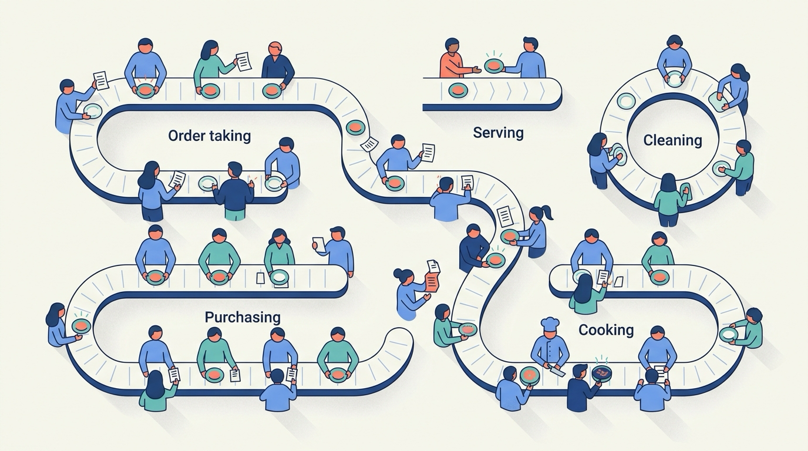
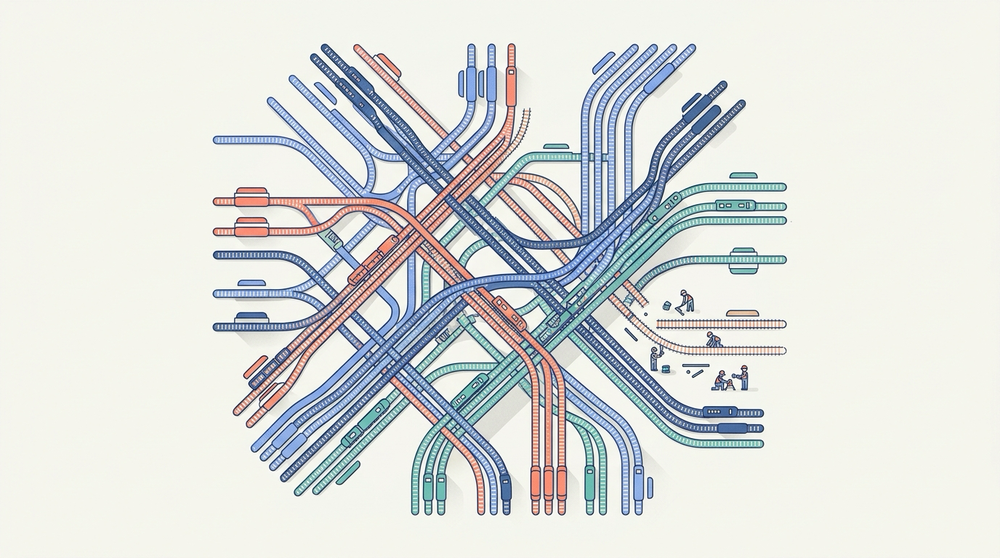
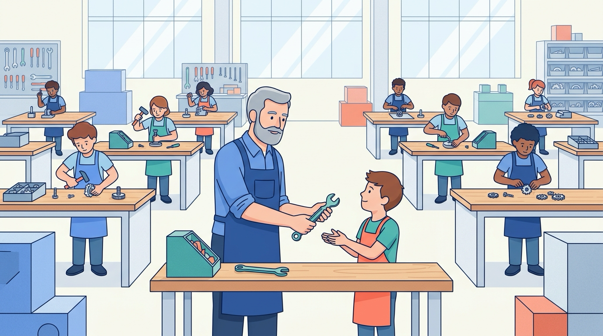
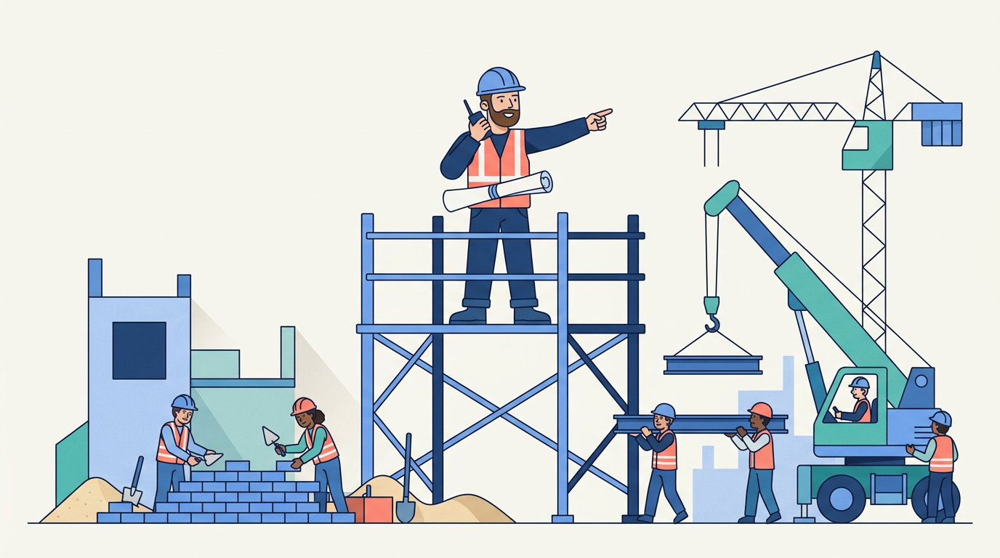
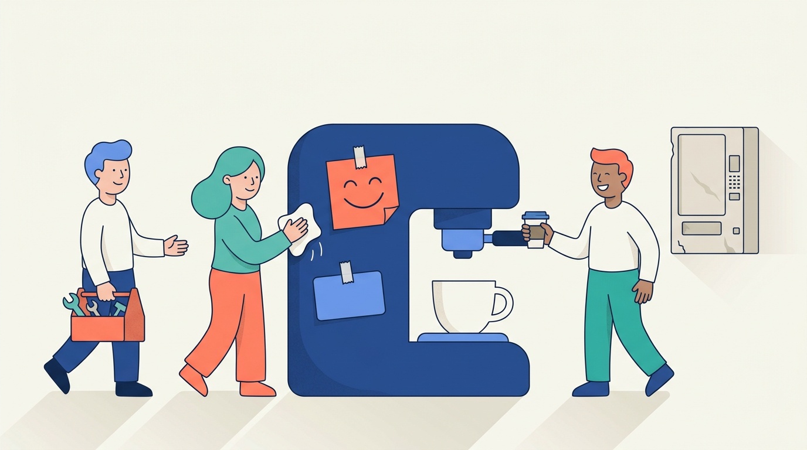
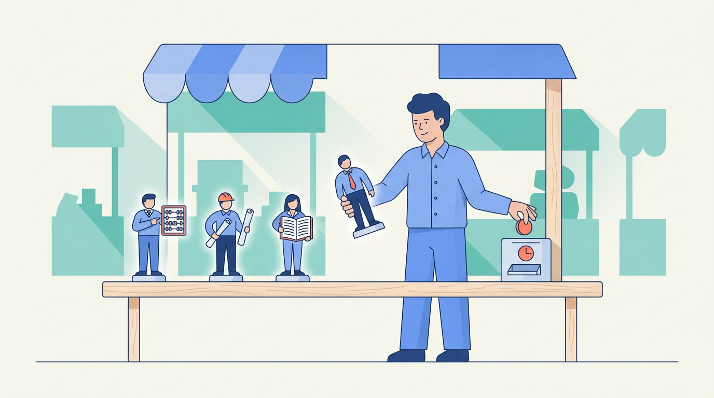
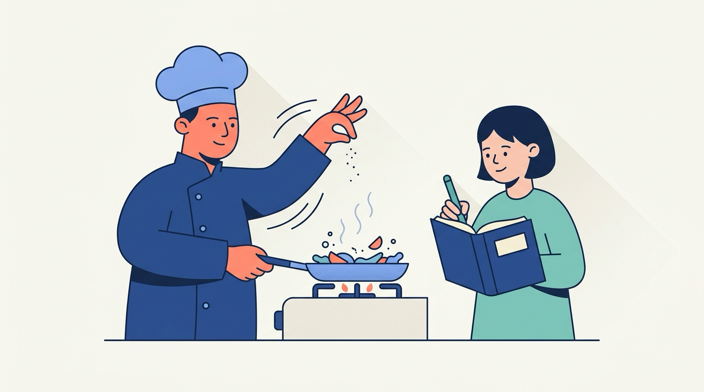
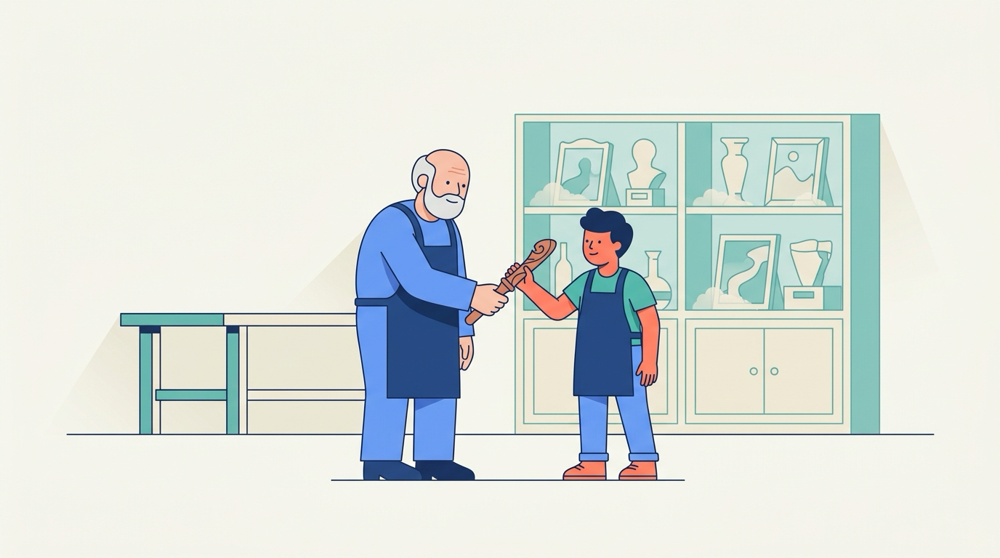
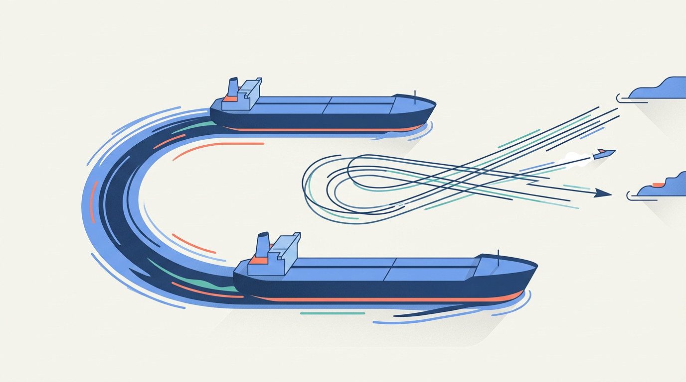

Эпизод — доклад Алексея о том, как превратить обычную компанию в AI-First: организацию, где узлы бизнес-процессов исполняют агенты, а люди учат их и улучшают. Разбирается вся вертикаль: компания как граф процессов, отказ от hand-coded агентов в пользу общего агентского ядра и бизнес-логики на уровне skills, вайбкодинг скиллов голосом доменными экспертами, Skill Store как механизм переиспользования, путь скилла от локальной песочницы до облачного агента на кроне. Отдельный пласт — люди: чемпионы «2 из 20», пересечение опыта и AI fluency, очеловеченные агент-персоны и риск потери junior-конвейера. Честно проговорены слабые места: evals вместо человека-верификатора, мультипликация ошибок на agent-to-agent handoff, vibe-coding tech debt и стоимость токенов (start expensive, then downshift). Урок стоит выучить, потому что он даёт целостную практическую рамку AI-трансформации компании — от онтологии процессов до кадровой политики и регуляторики.Эпизод — доклад Алексея о том, как превратить обычную компанию в AI-First: организацию, где узлы бизнес-процессов исполняют агенты, а люди учат их и улучшают. Разбирается вся вертикаль: компания как граф процессов, отказ от hand-coded агентов в пользу общего агентского ядра и бизнес-логики на уровне skills, вайбкодинг скиллов голосом доменными экспертами, Skill Store как механизм переиспользования, путь скилла от локальной песочницы до облачного агента на кроне. Отдельный пласт — люди: чемпионы «2 из 20», пересечение опыта и AI fluency, очеловеченные агент-персоны и риск потери junior-конвейера. Честно проговорены слабые места: evals вместо человека-верификатора, мультипликация ошибок на agent-to-agent handoff, vibe-coding tech debt и стоимость токенов (start expensive, then downshift). Урок стоит выучить, потому что он даёт целостную практическую рамку AI-трансформации компании — от онтологии процессов до кадровой политики и регуляторики.
УчастникиSpeakers
АО
Алексей Остриков ведущийhost
Разработчик AI-агентов в Яндексе, участник «летучего десанта», внедряющего агентов в бизнес-юниты компании. Автор доклада — результата нескольких месяцев размышлений и экспериментов о том, как превратить компанию в AI-First.Разработчик AI-агентов в Яндексе, участник «летучего десанта», внедряющего агентов в бизнес-юниты компании. Автор доклада — результата нескольких месяцев размышлений и экспериментов о том, как превратить компанию в AI-First.
Т
Тимур гостьguest
Участник из аудитории; поднимает ключевое возражение: людям сложно объяснить свою работу по шагам, поэтому извлечение опыта экспертов в скиллы — самая большая проблема подхода.Участник из аудитории; поднимает ключевое возражение: людям сложно объяснить свою работу по шагам, поэтому извлечение опыта экспертов в скиллы — самая большая проблема подхода.
К
Костя гостьguest
Участник из аудитории; спрашивает, хватит ли одних скиллов или для критичных процессов придётся модифицировать агентское ядро, и указывает на риск технического долга при массовом вайбкодинге скиллов.Участник из аудитории; спрашивает, хватит ли одних скиллов или для критичных процессов придётся модифицировать агентское ядро, и указывает на риск технического долга при массовом вайбкодинге скиллов.
Алексей Остриков, разработчик агентов в Яндексе из «летучего десанта», внедряющего AI в бизнес-юниты, открывает доклад разминкой с залом: что такое AI-First компания? От ответов аудитории он приходит к базовой рамке: любая компания — это сотни и тысячи процессов, которые исторически исполняли люди. Определение секции: AI-First компания — та, где процессы исполняют агенты, а люди их учат и улучшают.Алексей Остриков, разработчик агентов в Яндексе из «летучего десанта», внедряющего AI в бизнес-юниты, открывает доклад разминкой с залом: что такое AI-First компания? От ответов аудитории он приходит к базовой рамке: любая компания — это сотни и тысячи процессов, которые исторически исполняли люди. Определение секции: AI-First компания — та, где процессы исполняют агенты, а люди их учат и улучшают.

Ресторан — не «повара и официанты», а конвейеры процессов по шагамРесторан — не «повара и официанты», а конвейеры процессов по шагам
company as a bundle of processes Алексей Остриков
Компания — это не люди и оргструктура, а сотни процессов; каждый узел — кандидат на замену агентом или LLMworkflow.Компания — это не люди и оргструктура, а сотни процессов; каждый узел — кандидат на замену агентом или [[LLM|большая языковая модель]] [[workflow|рабочий процесс]].
Отправная точка всей рамки: любая компания — это не оргструктура и не продукт, а сотни, десятки или тысячи процессов. Есть долгие (запуск нового продукта, такси в новой стране), быстрые и закольцованные. Исторически каждый узел такого процесса исполнял человек: люди перекладывают бумажки, анализируют данные, суммаризируют, пишут презентации — «человек-человек-человек». Это удобная декомпозиция, потому что она превращает расплывчатый вопрос «как внедрить AI в компанию» в конкретный: какие узлы каких процессов можно передать агентам. Пока вы видите компанию как людей, автоматизировать нечего; как только видите её как граф процессов — у каждого узла появляется кандидат на замену агентом или LLM workflow.Отправная точка всей рамки: любая компания — это не оргструктура и не продукт, а сотни, десятки или тысячи процессов. Есть долгие (запуск нового продукта, такси в новой стране), быстрые и закольцованные. Исторически каждый узел такого процесса исполнял человек: люди перекладывают бумажки, анализируют данные, суммаризируют, пишут презентации — «человек-человек-человек». Это удобная декомпозиция, потому что она превращает расплывчатый вопрос «как внедрить AI в компанию» в конкретный: какие узлы каких процессов можно передать агентам. Пока вы видите компанию как людей, автоматизировать нечего; как только видите её как граф процессов — у каждого узла появляется кандидат на замену агентом или LLM workflow.
Компания = граф из сотен и тысяч процессов: долгих, быстрых, закольцованныхКомпания = граф из сотен и тысяч процессов: долгих, быстрых, закольцованных
Исторически каждый узел исполняет человек: «человек-человек-человек»Исторически каждый узел исполняет человек: «человек-человек-человек»
Декомпозиция превращает «как внедрить AI» в «какие узлы отдать агентам»Декомпозиция превращает «как внедрить AI» в «какие узлы отдать агентам»
Пока видишь компанию как людей — автоматизировать нечегоПока видишь компанию как людей — автоматизировать нечего
AI-First company
AI-First компания: определениеAI-First компания: определение
AI-First company Алексей Остриков
AI-First компания — инверсия ролей: агенты исполняют процессы, а люди их учат и улучшают, а не просто «пользуются AI».[[AI-First|AI прежде всего]] компания — инверсия ролей: агенты исполняют процессы, а люди их учат и улучшают, а не просто «пользуются AI».
Ключевое определение доклада. Рамку задал ответ из зала — «компания, где процессы пляшут от того, что их исполняют агенты, а не люди», — и Алексей её подхватил; его собственная формула: AI-агенты работают, а люди учат их и улучшают. Это не «компания, которая использует AI-инструменты», а инверсия ролей: агенты стоят в узлах процессов и делают работу, а люди переходят в позицию учителей. Предельный образ: все человеческие узлы заменены агентами, единственный оставшийся живой сотрудник — глава компании — сидит в кресле и просто наблюдает за происходящим. Важно, что это направление стремления, а не текущее состояние: Алексей прямо говорит «это то, к чему надо стремиться». Популярный твиттер-миф «один CEO и миллион агентов» он при этом называет невозможным: человеку нужна экспертиза, чтобы принимать решения, которые затем будут исполнять LLM.Ключевое определение доклада. Рамку задал ответ из зала — «компания, где процессы пляшут от того, что их исполняют агенты, а не люди», — и Алексей её подхватил; его собственная формула: AI-агенты работают, а люди учат их и улучшают. Это не «компания, которая использует AI-инструменты», а инверсия ролей: агенты стоят в узлах процессов и делают работу, а люди переходят в позицию учителей. Предельный образ: все человеческие узлы заменены агентами, единственный оставшийся живой сотрудник — глава компании — сидит в кресле и просто наблюдает за происходящим. Важно, что это направление стремления, а не текущее состояние: Алексей прямо говорит «это то, к чему надо стремиться». Популярный твиттер-миф «один CEO и миллион агентов» он при этом называет невозможным: человеку нужна экспертиза, чтобы принимать решения, которые затем будут исполнять [[LLM|большие языковые модели]].
Не «компания с AI-инструментами», а инверсия ролей людей и агентовНе «компания с AI-инструментами», а инверсия ролей людей и агентов
Агенты стоят в узлах процессов и делают работу; люди — учителяАгенты стоят в узлах процессов и делают работу; люди — учителя
Предельный образ: глава компании в кресле наблюдает — «то, к чему стремиться»Предельный образ: глава компании в кресле наблюдает — «то, к чему стремиться»
Миф «один CEO и миллион агентов» невозможен: решениям нужна экспертизаМиф «один CEO и миллион агентов» невозможен: решениям нужна экспертиза
“Вы действительно заменили агентами всех человеков… глава компании сидит в кресле и просто наблюдает за тем, что происходит. Это то, к чему надо стремиться. Вот это, собственно, определение AI-First компании.”auto
Прошлая эпоха: человек-человек-человек
Переходная: кусочки на LLM workflow / агентском ядре
Новая: агенты исполняют, люди учат
Три эпохи исполнения процессовТри эпохи исполнения процессов
era shift: humans → LLM workflows → agents Алексей Остриков
Три эпохи автоматизации: люди делают всё → LLMworkflow берут кусочки → агенты исполняют, люди учат.Три эпохи автоматизации: люди делают всё → [[LLM|большая языковая модель]] [[workflow|рабочие процессы]] берут кусочки → агенты исполняют, люди учат.
Алексей рисует три эпохи автоматизации процессов. Прошлая эпоха: каждый шаг делает человек, «куча людей потеет, чтобы что-то произошло». Переходная (с появлением LLM): отдельные люди в прошлом году начали автоматизировать кусочки процесса — и такой кусочек теперь работает на агентском ядре или на LLM workflow, который гораздо более детерминирован. Так в процессах начали происходить «кусочки магии», но целиком процесс всё ещё держится на людях. Новая эпоха: агенты заменяют человеческие узлы полностью, а роль людей смещается к обучению и улучшению агентов.Алексей рисует три эпохи автоматизации процессов. Прошлая эпоха: каждый шаг делает человек, «куча людей потеет, чтобы что-то произошло». Переходная (с появлением LLM): отдельные люди в прошлом году начали автоматизировать кусочки процесса — и такой кусочек теперь работает на агентском ядре или на LLM workflow, который гораздо более детерминирован. Так в процессах начали происходить «кусочки магии», но целиком процесс всё ещё держится на людях. Новая эпоха: агенты заменяют человеческие узлы полностью, а роль людей смещается к обучению и улучшению агентов.
Прошлая эпоха: каждый шаг — человек, «куча людей потеет»Прошлая эпоха: каждый шаг — человек, «куча людей потеет»
Алексей разбирает популярный в твиттере мем «один CEO и миллион агентов» и показывает, почему он не работает: для принятия решений всё равно нужна человеческая экспертиза. Дальше — контраст двух эпох разработки агентов: раньше каждый бизнес-процесс месяцами вручную шлифовали на low-level фреймворках, а теперь компания строит одно общее агентское ядро, поверх которого десятки команд (не обязательно программисты) пишут бизнес-логику на уровне скиллов.Алексей разбирает популярный в твиттере мем «один CEO и миллион агентов» и показывает, почему он не работает: для принятия решений всё равно нужна человеческая экспертиза. Дальше — контраст двух эпох разработки агентов: раньше каждый бизнес-процесс месяцами вручную шлифовали на low-level фреймворках, а теперь компания строит одно общее агентское ядро, поверх которого десятки команд (не обязательно программисты) пишут бизнес-логику на уровне скиллов.
Миллион агентов → один CEO: где ломается схемаМиллион агентов → один CEO: где ломается схема
"One CEO and a million agents" fallacy Алексей Остриков
«Один CEO и миллион агентов» не работает: агенты исполняют, но решения требуют доменной экспертизы многих людей.«Один CEO и миллион агентов» не работает: агенты исполняют, но решения требуют доменной экспертизы многих людей.
Популярная картинка будущего — компания из одного CEO и миллиона AI-агентов — не работает по фундаментальной причине: дело не в том, что человеку «лень» или «не хватит внимания» (эти версии из зала Алексей отвергает — «всё неверно»). Агенты (LLM) могут выполнять работу, но качественные решения требуют доменной экспертизы, которой у одного человека на десятки тысяч процессов просто нет. Поэтому формула AI-First компании другая: агенты работают, а люди учат их и улучшают. Человеческая экспертиза — не временный костыль, а постоянный слой в контуре: кто-то должен понимать процесс достаточно глубоко, чтобы формулировать, проверять и корректировать то, что делают агенты.Популярная картинка будущего — компания из одного CEO и миллиона AI-агентов — не работает по фундаментальной причине: дело не в том, что человеку «лень» или «не хватит внимания» (эти версии из зала Алексей отвергает — «всё неверно»). Агенты ([[LLM|большая языковая модель]]) могут выполнять работу, но качественные решения требуют доменной экспертизы, которой у одного человека на десятки тысяч процессов просто нет. Поэтому формула AI-First компании другая: агенты работают, а люди учат их и улучшают. Человеческая экспертиза — не временный костыль, а постоянный слой в контуре: кто-то должен понимать процесс достаточно глубоко, чтобы формулировать, проверять и корректировать то, что делают агенты.
Дело не в лени и не во внимании CEO — эти версии Алексей отвергаетДело не в лени и не во внимании CEO — эти версии Алексей отвергает
LLM исполняют работу, но качественные решения требуют доменной экспертизыLLM исполняют работу, но качественные решения требуют доменной экспертизы
У одного человека нет экспертизы на десятки тысяч процессовУ одного человека нет экспертизы на десятки тысяч процессов
Люди — постоянный слой в контуре: формулируют, проверяют, корректируют агентовЛюди — постоянный слой в контуре: формулируют, проверяют, корректируют агентов

Отдельная железная дорога под каждый маршрут — вместо общей сетиОтдельная железная дорога под каждый маршрут — вместо общей сети
hand-coded agents on low-level frameworks Алексей Остриков
Старая эпоха: каждый процесс месяцами шлифуют вручную на низкоуровневом фреймворке — при десятках тысяч процессов это не масштабируется.Старая эпоха: каждый процесс месяцами шлифуют вручную на низкоуровневом фреймворке — при десятках тысяч процессов это не масштабируется.
Старая парадигма (ещё прошлый год): берёшь низкоуровневый фреймворк вроде OpenAI Agents и пишешь бизнес-логику автоматизации прямо на Python — каждый процесс как отдельный проект. Алексей приводит пример: инженер три месяца «вышлифовывал» один процесс — выпарсить данные из документов, приложенных к тикетам, и сложить в табличку. При этом в компании масштаба Яндекса таких процессов десятки тысяч, то есть подход принципиально не масштабируется: автоматизация упирается в ручной труд разработчиков и не параллелится. Именно это ограничение и вводит новую эпоху — нужно развязать и распараллелить эту активность: отделить разработку ядра от разработки самих автоматизаций.Старая парадигма (ещё прошлый год): берёшь низкоуровневый фреймворк вроде OpenAI Agents и пишешь бизнес-логику автоматизации прямо на Python — каждый процесс как отдельный проект. Алексей приводит пример: инженер три месяца «вышлифовывал» один процесс — выпарсить данные из документов, приложенных к тикетам, и сложить в табличку. При этом в компании масштаба Яндекса таких процессов десятки тысяч, то есть подход принципиально не масштабируется: автоматизация упирается в ручной труд разработчиков и не параллелится. Именно это ограничение и вводит новую эпоху — нужно развязать и распараллелить эту активность: отделить разработку ядра от разработки самих автоматизаций.
Раньше: бизнес-логика на Python поверх низкоуровневых фреймворков (OpenAI Agents)Раньше: бизнес-логика на Python поверх низкоуровневых фреймворков (OpenAI Agents)
Пример: инженер 3 месяца шлифовал ОДИН процесс парсинга документовПример: инженер 3 месяца шлифовал ОДИН процесс парсинга документов
В компании масштаба Яндекса процессов — десятки тысячВ компании масштаба Яндекса процессов — десятки тысяч
Вывод: развязать ядро и автоматизации, распараллелить работуВывод: развязать ядро и автоматизации, распараллелить работу
“Он 3 месяца практически вышлифовывал процесс… уму непостижимо, как это долго было для одного процесса. А процессов — десятки тысяч.”auto
Скиллы: бизнес-логика от десятков команд (в т.ч. не-программистов)
Общее агентское ядро (general agent, harness) — одна сильная команда
Модели / low-level инфраструктура
Два слоя AI-first разработкиДва слоя AI-first разработки
shared agent core + skill-level business logic Алексей Остриков
Новая парадигма: одно общее агентское ядро (harness) от сильной команды, а бизнес-логику пишут десятки команд на уровне скиллов.Новая парадигма: одно общее агентское ядро ([[harness|каркас-обвязка агента]]) от сильной команды, а бизнес-логику пишут десятки команд на уровне скиллов.
Новая парадигма развязывает разработку на два слоя. Внизу — одна команда умных людей, которая вкладывается в общее агентское ядро (универсальный агент, harness): вместо низкоуровневых фреймворков — более мощные. Сверху — десятки команд, которые реализуют бизнес-логику на уровне скиллов, не трогая ядро; причём это не обязательно программисты, а носители доменной экспертизы. Так автоматизация процессов параллелится: вместо очереди из тысяч Python-проектов компания получает платформу, где каждая команда упаковывает свой процесс в скилл (по образцу скиллов в Claude Code / Codex) и публикует его в общий репозиторий скиллов. Это и есть организационный каркас AI-First компании.Новая парадигма развязывает разработку на два слоя. Внизу — одна команда умных людей, которая вкладывается в общее агентское ядро (универсальный агент, harness): вместо низкоуровневых фреймворков — более мощные. Сверху — десятки команд, которые реализуют бизнес-логику на уровне скиллов, не трогая ядро; причём это не обязательно программисты, а носители доменной экспертизы. Так автоматизация процессов параллелится: вместо очереди из тысяч Python-проектов компания получает платформу, где каждая команда упаковывает свой процесс в скилл (по образцу скиллов в Claude Code / Codex) и публикует его в общий репозиторий скиллов. Это и есть организационный каркас AI-First компании.
Внизу — одна команда строит общее агентское ядро (универсальный агент, harness)Внизу — одна команда строит общее агентское ядро (универсальный агент, harness)
Сверху — десятки команд пишут бизнес-логику как скиллы, не трогая ядроСверху — десятки команд пишут бизнес-логику как скиллы, не трогая ядро
Авторы скиллов — носители доменной экспертизы, не обязательно программистыАвторы скиллов — носители доменной экспертизы, не обязательно программисты
Скиллы публикуются в общий репозиторий — автоматизация параллелитсяСкиллы публикуются в общий репозиторий — автоматизация параллелится
Skills: инфраструктурные и бизнесовые, вайбкодинг голосомSkills: Infrastructure vs Business, and Vibecoding Them by Voice
В этом фрагменте Алексей разворачивает двухэтажную архитектуру скиллов внутри AI-first компании: внизу — инфраструктурные скиллы, дающие агентам доступ к внутренним системам (wiki, тикеты, ClickHouse), а поверх них нетехнические эксперты буквально голосом наговаривают бизнесовые скиллы и получают себе «виртуального джуниора». Ключевой поворот секции — предупреждение: пока результаты агентов проверяет медлительный человек, магии не будет; кратное ускорение случается только после замены человека-верификатора на evals.В этом фрагменте Алексей разворачивает двухэтажную архитектуру скиллов внутри AI-first компании: внизу — инфраструктурные скиллы, дающие агентам доступ к внутренним системам (wiki, тикеты, ClickHouse), а поверх них нетехнические эксперты буквально голосом наговаривают бизнесовые скиллы и получают себе «виртуального джуниора». Ключевой поворот секции — предупреждение: пока результаты агентов проверяет медлительный человек, магии не будет; кратное ускорение случается только после замены человека-верификатора на evals.
Внутренние системы: wiki, тикеты, ClickHouse, документы
Слои скиллов: от внутренних систем к бизнес-процессамСлои скиллов: от внутренних систем к бизнес-процессам
infrastructure skills Алексей Остриков
Инфраструктурные скиллы — нижний слой: доступ агента к wiki, тикетам, ClickHouse; без него бизнес-скиллам не до чего дотянуться.Инфраструктурные скиллы — нижний слой: доступ агента к [[wiki|внутренняя база знаний]], тикетам, ClickHouse; без него бизнес-скиллам не до чего дотянуться.
Инфраструктурные скиллы — это нижний слой автоматизации в большой компании: скиллы, которые дают агенту доступ к внутренним системам — wiki с инструкциями, данным о тикетах, оргструктуре компании, встречах людей, документам, трассировкам и аналитическим базам вроде ClickHouse. Ключевая мысль: сотрудник, выполняя работу, сам постоянно ходит в эти же системы — читает инструкции из вики, берёт документы, использует для анализа внутренний ClickHouse. Значит, агент сможет заменить его в процессе только если у него есть тот же доступ. Такие скиллы пишут отдельные (технические) люди внутри компании, а дальше они становятся фундаментом: поверх них бизнес-процессы раскладываются на атомарные шаги. Без доступа к инфраструктурным скиллам, подчёркивает Алексей, «ничего невозможно» — верхнеуровневым бизнесовым скиллам просто не до чего дотянуться.Инфраструктурные скиллы — это нижний слой автоматизации в большой компании: скиллы, которые дают агенту доступ к внутренним системам — wiki с инструкциями, данным о тикетах, оргструктуре компании, встречах людей, документам, трассировкам и аналитическим базам вроде ClickHouse. Ключевая мысль: сотрудник, выполняя работу, сам постоянно ходит в эти же системы — читает инструкции из вики, берёт документы, использует для анализа внутренний ClickHouse. Значит, агент сможет заменить его в процессе только если у него есть тот же доступ. Такие скиллы пишут отдельные (технические) люди внутри компании, а дальше они становятся фундаментом: поверх них бизнес-процессы раскладываются на атомарные шаги. Без доступа к инфраструктурным скиллам, подчёркивает Алексей, «ничего невозможно» — верхнеуровневым бизнесовым скиллам просто не до чего дотянуться.
Дают агенту доступ к внутренним системам: wiki, тикеты, оргструктура, ClickHouseДают агенту доступ к внутренним системам: wiki, тикеты, оргструктура, ClickHouse
Агент заменит сотрудника только с тем же доступом, что у человекаАгент заменит сотрудника только с тем же доступом, что у человека
Пишут их технические люди — это фундамент компанииПишут их технические люди — это фундамент компании
Поверх них бизнес-процессы раскладываются на атомарные шагиПоверх них бизнес-процессы раскладываются на атомарные шаги
1Эксперт наговаривает процесс голосом
2Агент пробует, человек поправляет (~20 мин)
3«Создай из переписки скилл»
4Скилл установлен: задача решается одной фразой
5Недели доводки — скилл стабилен
Путь от голоса к скиллуПуть от голоса к скиллу
vibecoding business skills by voice Алексей Остриков
Эксперт наговаривает процесс голосом, ~20 минут правок — и фраза «создай из переписки скилл» превращает опыт в артефакт.Эксперт наговаривает процесс голосом, ~20 минут правок — и фраза «создай из переписки скилл» превращает опыт в артефакт.
Бизнесовый скилл рождается не из кода, а из разговора. Технарь садится рядом с нетехническим экспертом (например, девушкой или парнем из маркетинга), даёт ему ассистента с подключёнными инфраструктурными скиллами и просит надиктовать голосом свой процесс: «для анализа маркетинговой кампании я сначала выбираю сегмент, иду в такую-то базу, запускаю плюс-минус такой запрос». Дальше идёт длинный тред проб и ошибок: агент идёт не туда, человек поправляет, и после ~20 минут переписки произносится магическая фраза — «создай на основании этой переписки скилл». Получившийся скилл сохраняется, ставится в ассистента, и в новом треде задача решается одной фразой: весь контекст задачи уже внутри скилла. Первые версии работают плохо, но несколько недель «выдрачивания» со стороны человека, который шарит, превращают его опыт в переиспользуемый артефакт.Бизнесовый скилл рождается не из кода, а из разговора. Технарь садится рядом с нетехническим экспертом (например, девушкой или парнем из маркетинга), даёт ему ассистента с подключёнными инфраструктурными скиллами и просит надиктовать голосом свой процесс: «для анализа маркетинговой кампании я сначала выбираю сегмент, иду в такую-то базу, запускаю плюс-минус такой запрос». Дальше идёт длинный тред проб и ошибок: агент идёт не туда, человек поправляет, и после ~20 минут переписки произносится магическая фраза — «создай на основании этой переписки скилл». Получившийся скилл сохраняется, ставится в ассистента, и в новом треде задача решается одной фразой: весь контекст задачи уже внутри скилла. Первые версии работают плохо, но несколько недель «выдрачивания» со стороны человека, который шарит, превращают его опыт в переиспользуемый артефакт.
Нетехнический эксперт диктует процесс агенту с инфраструктурными скилламиНетехнический эксперт диктует процесс агенту с инфраструктурными скиллами
Тред проб и ошибок: агент идёт не туда — человек поправляетТред проб и ошибок: агент идёт не туда — человек поправляет
Магическая фраза: «создай на основании этой переписки скилл»Магическая фраза: «создай на основании этой переписки скилл»
Первые версии слабые; недели доводки делают скилл стабильнымПервые версии слабые; недели доводки делают скилл стабильным

Мастер обучил подмастерье одной операции — и цех состоит из десятков таких подмастерьевМастер обучил подмастерье одной операции — и цех состоит из десятков таких подмастерьев
skill as a hired virtual junior Алексей Остриков
Готовый бизнес-скилл — это «виртуальный джуниор»: опыт эксперта в узле процесса, и таких агентиков нужны сотни, а не 20 000 людей.Готовый бизнес-скилл — это «виртуальный джуниор»: опыт эксперта в узле процесса, и таких агентиков нужны сотни, а не 20 000 людей.
Итог вайбкодинга бизнес-скилла — у эксперта появляется «маленький виртуальный человечек»: как будто маркетолог наняла себе джуниора-аналитика маркетинговых кампаний. Полтора месяца мучений с настройкой — и часть её опыта переложена в скиллы, которые выполняют атомарный кусок процесса без неё. Важно масштабирование этой идеи: любые бизнес-процессы (а их десятки и сотни) раскладываются на такие маленькие атомарные составляющие, и в узлах процесса встают «маленькие агентики». Так автоматизация растёт не сверху (один большой AI-проект), а снизу — из множества маленьких скиллов, каждый из которых воплощает опыт конкретного живого специалиста. В пределе компания уже не должна держать 20 000 человек — хватит 5 000 тех, кто умеет тюнить агентов.Итог вайбкодинга бизнес-скилла — у эксперта появляется «маленький виртуальный человечек»: как будто маркетолог наняла себе джуниора-аналитика маркетинговых кампаний. Полтора месяца мучений с настройкой — и часть её опыта переложена в скиллы, которые выполняют атомарный кусок процесса без неё. Важно масштабирование этой идеи: любые бизнес-процессы (а их десятки и сотни) раскладываются на такие маленькие атомарные составляющие, и в узлах процесса встают «маленькие агентики». Так автоматизация растёт не сверху (один большой AI-проект), а снизу — из множества маленьких скиллов, каждый из которых воплощает опыт конкретного живого специалиста. В пределе компания уже не должна держать 20 000 человек — хватит 5 000 тех, кто умеет тюнить агентов.
Полтора месяца настройки — и часть опыта эксперта живёт в скиллеПолтора месяца настройки — и часть опыта эксперта живёт в скилле
Процессы дробятся на атомарные шаги, в узлах — «маленькие агентики»Процессы дробятся на атомарные шаги, в узлах — «маленькие агентики»
Автоматизация растёт снизу, из множества маленьких скилловАвтоматизация растёт снизу, из множества маленьких скиллов
В пределе вместо 20 000 сотрудников — 5 000 тюнеров агентовВ пределе вместо 20 000 сотрудников — 5 000 тюнеров агентов
Скорость трассы задаёт дремлющий сторож у шлагбаума — пока его не заменит автоматикаСкорость трассы задаёт дремлющий сторож у шлагбаума — пока его не заменит автоматика
evals instead of a human verifier Алексей Остриков
Пока результаты агентов проверяет человек, выигрыш +20%; кратное ускорение даёт только замена верификатора на evals.Пока результаты агентов проверяет человек, выигрыш +20%; кратное ускорение даёт только замена верификатора на [[evals|автоматические проверки качества]].
Главная ловушка первой волны автоматизации: агентов ставят на выполнение шагов процесса, а проверку результатов оставляют человеку. Агент делает работу за 15 минут — а дальше документ попадает к «Васе», который пошёл пить кофе, пришёл на следующий день «не в вайбе», посмотрел мемы и добрался до задачи только к трём часам дня. Магия не случается: выигрыш — жалкие +20%, потому что человек-верификатор остаётся медленным звеном конвейера. Следующий уровень — заменить проверку на evals: либо встроенная проверка в конце скилла, либо отдельный скилл-проверяльщик, плюс правильный подбор моделей под задачи. Только когда людей «почти отовсюду вытащили», процесс сжимается кратно (условно с четырёх дней до двух), а компания начинает делать в пять раз больше работы меньшим числом людей: не 20 000 сотрудников, а 5 000 тех, кто умеет тюнить агентов.Главная ловушка первой волны автоматизации: агентов ставят на выполнение шагов процесса, а проверку результатов оставляют человеку. Агент делает работу за 15 минут — а дальше документ попадает к «Васе», который пошёл пить кофе, пришёл на следующий день «не в вайбе», посмотрел мемы и добрался до задачи только к трём часам дня. Магия не случается: выигрыш — жалкие +20%, потому что человек-верификатор остаётся медленным звеном конвейера. Следующий уровень — заменить проверку на evals: либо встроенная проверка в конце скилла, либо отдельный скилл-проверяльщик, плюс правильный подбор моделей под задачи. Только когда людей «почти отовсюду вытащили», процесс сжимается кратно (условно с четырёх дней до двух), а компания начинает делать в пять раз больше работы меньшим числом людей: не 20 000 сотрудников, а 5 000 тех, кто умеет тюнить агентов.
Агент делает работу за 15 минут — «Вася» проверит завтра к 15:00Агент делает работу за 15 минут — «Вася» проверит завтра к 15:00
Замена: eval в конце скилла или отдельный скилл-проверяльщикЗамена: [[eval|автоматическая проверка]] в конце скилла или отдельный скилл-проверяльщик
Люди убраны почти отовсюду → процесс сжимается кратно, работы в 5 раз большеЛюди убраны почти отовсюду → процесс сжимается кратно, работы в 5 раз больше
“Если вы только на реализации элементов процесса выставили агентов, а проверяют люди — ничего не увеличится, там плюс 20%.”auto
Элементы новой системы: Skill Store, локальные и облачные агентыElements of the New System: Skill Store, Local and Cloud Agents
Разобрав, зачем компании переходить на agentic-процессы, Алексей описывает конкретные элементы новой системы: Skill Store как общее хранилище скиллов, локальные агенты как полигон для отладки и облачные агенты на cron для «выдроченных» скиллов. Отдельный сюжет — люди: из двадцати участников воркшопа лишь у двух «загораются глаза», и именно их нужно превращать в чемпионов трансформации.Разобрав, зачем компании переходить на agentic-процессы, Алексей описывает конкретные элементы новой системы: Skill Store как общее хранилище скиллов, локальные агенты как полигон для отладки и облачные агенты на cron для «выдроченных» скиллов. Отдельный сюжет — люди: из двадцати участников воркшопа лишь у двух «загораются глаза», и именно их нужно превращать в чемпионов трансформации.
Skill Store: скиллы всех сотрудников стекаются в общее хранилищеSkill Store: скиллы всех сотрудников стекаются в общее хранилище
Skill Store Алексей Остриков
Skill Store — общее хранилище скиллов: любой сотрудник публикует навайбкоженный скилл, и он становится активом всей компании.[[Skill Store|магазин скиллов компании]] — общее хранилище скиллов: любой сотрудник публикует навайбкоженный скилл, и он становится активом всей компании.
Skill Store — центральное хранилище скиллов компании и, по мнению спикера, основа всей новой системы: «без этого ключевого элемента ничего невозможно». Идея в том, что любой сотрудник — не только программист — может голосом «навайбкодить» свой скилл, опубликовать его и пошарить на команду. Через то же хранилище сотрудники получают доступ к инфраструктурным скиллам (доступ к внутренним системам, данным, интеграциям), поэтому чужие наработки переиспользуются, а не переизобретаются. Skill Store превращает разрозненную автоматизацию «на коленке» в общий актив компании: скилл, отлаженный одним экспертом, становится инструментом для всех. Это ключевой механизм масштабирования agentic подхода: знание процесса кодифицируется в скилл и распространяется, как приложение в магазине приложений.Skill Store — центральное хранилище скиллов компании и, по мнению спикера, основа всей новой системы: «без этого ключевого элемента ничего невозможно». Идея в том, что любой сотрудник — не только программист — может голосом «навайбкодить» свой скилл, опубликовать его и пошарить на команду. Через то же хранилище сотрудники получают доступ к инфраструктурным скиллам (доступ к внутренним системам, данным, интеграциям), поэтому чужие наработки переиспользуются, а не переизобретаются. Skill Store превращает разрозненную автоматизацию «на коленке» в общий актив компании: скилл, отлаженный одним экспертом, становится инструментом для всех. Это ключевой механизм масштабирования [[agentic|агентного, действует сам]] подхода: знание процесса кодифицируется в скилл и распространяется, как приложение в магазине приложений.
Любой сотрудник, не только программист, публикует свой скилл голосомЛюбой сотрудник, не только программист, публикует свой скилл голосом
Через Skill Store раздаются и инфраструктурные скиллы (доступ к системам)Через Skill Store раздаются и инфраструктурные скиллы (доступ к системам)
Чужие наработки переиспользуются, а не переизобретаютсяЧужие наработки переиспользуются, а не переизобретаются
«Без этого ключевого элемента ничего невозможно» — основа системы«Без этого ключевого элемента ничего невозможно» — основа системы
“Skill store — это то место, в которое все сотрудники могут голосом написать свой скилл, отгрузить, пошарить на команду. Имеет доступ к инфраструктурным скилам. Без этого ключевого элемента ничего невозможно.”auto
Домашняя кухня шефа: блюдо доводят до автоматизма там, где ошибка ничего не стоитДомашняя кухня шефа: блюдо доводят до автоматизма там, где ошибка ничего не стоит
local agent as training ground Алексей Остриков
Локальный агент — песочница: вайбкодишь скилл на самой мощной модели до «19 из 20», и только потом думаешь про облако и экономию.Локальный агент — песочница: вайбкодишь скилл на самой мощной модели до «19 из 20», и только потом думаешь про облако и экономию.
Локальный агент на ноутбуке — это тренировочный полигон: удобная песочница, где человек быстро проверяет идеи и занимается вайбкодингом скиллов в постоянной итерации. Под рукой («под ногами») лежат рабочие документы, и отлаживать так проще, чем «через вебку» где-то в облаке. Важно: локальный агент — это не локальная модель. Агент живёт на ноуте, но ходит в самые мощные модели (внешние или внутренние); экономить на моделях на этом этапе нельзя, иначе «ничего не заработает» — начинать надо с супермощного. Критерий выхода из песочницы — идеально «выдроченный» скилл, который срабатывает «19 из 20 раз» и который не страшно отдать в облачного агента. Оптимизация стоимости (переход с топовой модели на более дешёвую) начинается только потом, когда скилл уже в проде и жжёт токены.Локальный агент на ноутбуке — это тренировочный полигон: удобная песочница, где человек быстро проверяет идеи и занимается вайбкодингом скиллов в постоянной итерации. Под рукой («под ногами») лежат рабочие документы, и отлаживать так проще, чем «через вебку» где-то в облаке. Важно: локальный агент — это не локальная модель. Агент живёт на ноуте, но ходит в самые мощные модели (внешние или внутренние); экономить на моделях на этом этапе нельзя, иначе «ничего не заработает» — начинать надо с супермощного. Критерий выхода из песочницы — идеально «выдроченный» скилл, который срабатывает «19 из 20 раз» и который не страшно отдать в облачного агента. Оптимизация стоимости (переход с топовой модели на более дешёвую) начинается только потом, когда скилл уже в проде и жжёт токены.
Быстрая итерация на ноутбуке: документы под рукой, ошибка бесплатнаБыстрая итерация на ноутбуке: документы под рукой, ошибка бесплатна
Локальный агент ≠ локальная модель: ходит в самые мощные LLMЛокальный агент ≠ локальная модель: ходит в самые мощные [[LLM|большая языковая модель]]
Экономить на моделях в песочнице нельзя — «ничего не заработает»Экономить на моделях в песочнице нельзя — «ничего не заработает»
Критерий выпуска: скилл срабатывает 19 из 20 раз; удешевление модели — потомКритерий выпуска: скилл срабатывает 19 из 20 раз; удешевление модели — потом
Кофемашина с таймером: варит каждое утро сама, и пользуется вся командаКофемашина с таймером: варит каждое утро сама, и пользуется вся команда
cloud agent on cron Алексей Остриков
«Выдроченный» скилл «ставят на крон»: облачный агент работает сам по расписанию, доступен всей команде — тут и начинается переход на более дешёвые модели.«Выдроченный» скилл «ставят на крон»: облачный агент работает сам по расписанию, доступен всей команде — тут и начинается переход на более дешёвые модели.
Облачный агент — следующая ступень после локальной отладки: когда скилл доведён до надёжности, его «ставят на крон» — агент работает в облаке постоянно, по расписанию или по триггеру, а не только пока у автора открыт ноутбук. Ключевое отличие от локального агента — доступность: с облачной «цифровой личностью» должны иметь возможность общаться и другие сотрудники, она становится общим ресурсом, а не личным инструментом. Для этого компании нужна внутренняя инфраструктура, куда таких агентов можно реально «поселить», чтобы они сидели и «ворошили» задачи. Именно здесь начинается «эпоха оптимизации»: когда куча народу сжигает сотни долларов в день на токены, можно спускаться с Opus на более дешёвую модель внутри конкретного процесса — при условии, что нет просадки по качеству.Облачный агент — следующая ступень после локальной отладки: когда скилл доведён до надёжности, его «ставят на крон» — агент работает в облаке постоянно, по расписанию или по триггеру, а не только пока у автора открыт ноутбук. Ключевое отличие от локального агента — доступность: с облачной «цифровой личностью» должны иметь возможность общаться и другие сотрудники, она становится общим ресурсом, а не личным инструментом. Для этого компании нужна внутренняя инфраструктура, куда таких агентов можно реально «поселить», чтобы они сидели и «ворошили» задачи. Именно здесь начинается «эпоха оптимизации»: когда куча народу сжигает сотни долларов в день на токены, можно спускаться с Opus на более дешёвую модель внутри конкретного процесса — при условии, что нет просадки по качеству.
Работает в облаке по крону/триггеру, а не пока открыт ноутбук автораРаботает в облаке по крону/триггеру, а не пока открыт ноутбук автора
Становится общим ресурсом: с ним общаются другие сотрудникиСтановится общим ресурсом: с ним общаются другие сотрудники
Нужна внутренняя инфраструктура, куда агентов можно «поселить»Нужна внутренняя инфраструктура, куда агентов можно «поселить»
Эпоха оптимизации: переход с Opus на модель дешевле — без просадки качестваЭпоха оптимизации: переход с Opus на модель дешевле — без просадки качества
Люди в мире агентов: новые роли, ключи от будущего, очеловеченные аватарыPeople in the Agent World: New Roles, Keys to the Future, Humanized Avatars
В финальной части доклада Алексей рисует картину работы будущего: человек любой профессии превращается в координатора собственной команды агентов, которыми управляет голосом с телефона. «Контроль будущего мира» достанется людям на пересечении реальной многолетней экспертизы и AI fluency, а внедрять агентов в организацию проще всего через «очеловеченные» именные цифровые персонажи — так adoption идёт быстрее и веселее.В финальной части доклада Алексей рисует картину работы будущего: человек любой профессии превращается в координатора собственной команды агентов, которыми управляет голосом с телефона. «Контроль будущего мира» достанется людям на пересечении реальной многолетней экспертизы и AI fluency, а внедрять агентов в организацию проще всего через «очеловеченные» именные цифровые персонажи — так adoption идёт быстрее и веселее.

Прораб с рацией: не кладёт кирпичи сам, а координирует бригадыПрораб с рацией: не кладёт кирпичи сам, а координирует бригады
voice-first agent coordination Алексей Остриков
Работа будущего — не делать руками, а голосом с телефона координировать свою команду агентов, как прораб бригады.Работа будущего — не делать руками, а голосом с телефона координировать свою команду агентов, как прораб бригады.
Будущий формат работы почти любой профессии — не выполнение задач руками, а координация своей команды агентов: сотрудник голосом раздаёт указания и перекладывает обычную работу на агентов прямо с телефона — «в очереди за кофе». Ноутбук при этом «особо не понадобится». Это касается разработчиков, маркетологов и руководителей одинаково. Люди остаются необходимыми: они носители экспертизы, они создают и настраивают агентов, а не просто наблюдают, — и у человека ограничен умственный контекст, который он может держать в голове. Исключение — физический труд (оператор пункта выдачи заказов Яндекс-маркета): ему придётся дождаться гуманоидных роботов. Привычку перекладывать обычную работу на агентов нужно сознательно выращивать в себе и помогать воспитывать её в других.Будущий формат работы почти любой профессии — не выполнение задач руками, а координация своей команды агентов: сотрудник голосом раздаёт указания и перекладывает обычную работу на агентов прямо с телефона — «в очереди за кофе». Ноутбук при этом «особо не понадобится». Это касается разработчиков, маркетологов и руководителей одинаково. Люди остаются необходимыми: они носители экспертизы, они создают и настраивают агентов, а не просто наблюдают, — и у человека ограничен умственный контекст, который он может держать в голове. Исключение — физический труд (оператор пункта выдачи заказов Яндекс-маркета): ему придётся дождаться гуманоидных роботов. Привычку перекладывать обычную работу на агентов нужно сознательно выращивать в себе и помогать воспитывать её в других.
Любая профессия превращается в координацию агентов — голосом, с телефона, «в очереди за кофе»Любая профессия превращается в координацию агентов — голосом, с телефона, «в очереди за кофе»
Человек остаётся нужен: он носитель экспертизы, создаёт и настраивает агентовЧеловек остаётся нужен: он носитель экспертизы, создаёт и настраивает агентов
Ограничение человека — умственный контекст, поэтому рутину сгружаем агентамОграничение человека — умственный контекст, поэтому рутину сгружаем агентам
Исключение — физический труд: там придётся ждать гуманоидных роботовИсключение — физический труд: там придётся ждать гуманоидных роботов
Реальный опыт: 7–8 лет в профессии, senior-экспертиза
AI fluency: агенты, модели, context, skills — ~2 месяца прокачки
Контроль будущего мира: два слагаемыхКонтроль будущего мира: два слагаемых
experience × AI fluency intersection Алексей Остриков
«Ключи от будущего» — у людей на пересечении 7–8 лет реальной экспертизы и AI fluency, которую качают за ~2 месяца.«Ключи от будущего» — у людей на пересечении 7–8 лет реальной экспертизы и [[AI fluency|свободное владение AI]], которую качают за ~2 месяца.
«Контроль будущего мира» получат люди на пересечении двух качеств. Первое — настоящий опыт: 7–8 лет, потраченных на то, чтобы стать реальным специалистом уровня senior в своей области. Второе — AI fluency: умение разговаривать с агентами, выбирать модели, управлять контекстом, вайбкодить skills. Принципиально, что второе — просто навык, а не талант: на его прокачку нужно около двух месяцев, не нужно «заканчивать лучший университет и иметь IQ 120». Именно люди на этом пересечении, скорее всего, станут руководителями и реформаторами, которые поведут AI-трансформацию внутри компаний.«Контроль будущего мира» получат люди на пересечении двух качеств. Первое — настоящий опыт: 7–8 лет, потраченных на то, чтобы стать реальным специалистом уровня [[senior|старший специалист]] в своей области. Второе — AI fluency: умение разговаривать с агентами, выбирать модели, управлять контекстом, вайбкодить [[skills|навыки-инструкции для агента]]. Принципиально, что второе — просто навык, а не талант: на его прокачку нужно около двух месяцев, не нужно «заканчивать лучший университет и иметь [[IQ|коэффициент интеллекта]] 120». Именно люди на этом пересечении, скорее всего, станут руководителями и реформаторами, которые поведут AI-трансформацию внутри компаний.
Слагаемое 1: настоящий опыт уровня senior — 7–8 лет в профессииСлагаемое 1: настоящий опыт уровня senior — 7–8 лет в профессии
Слагаемое 2: AI fluency — агенты, выбор моделей, context, вайбкодинг skillsСлагаемое 2: AI fluency — агенты, выбор моделей, [[context|контекст задачи]], вайбкодинг skills
AI fluency — навык, не талант: ~2 месяца прокачки, IQ 120 не нуженAI fluency — навык, не талант: ~2 месяца прокачки, IQ 120 не нужен
Именно эти люди станут руководителями и реформаторами AI-трансформацииИменно эти люди станут руководителями и реформаторами AI-трансформации
10 человек в команде
5 вообще попробуют
3 продолжат после неудач
2 локальных AI-чемпиона (×5)
Воронка adoption в команде из 10Воронка adoption в команде из 10
local AI champions (2-of-10 adoption funnel) Алексей Остриков
Из 10 человек лишь 2 станут AI-чемпионами с выхлопом ×5 — их надо «обнимать и удерживать», иначе уйдут делать революцию к конкурентам.Из 10 человек лишь 2 станут AI-чемпионами с выхлопом ×5 — их надо «обнимать и удерживать», иначе уйдут делать революцию к конкурентам.
Эмпирика внедрения агентов в любую команду из десяти человек: пятеро просто «зевнут» и не пойдут, из пяти попробовавших двое отвалятся, у третьего не получится — и лишь двое через месяц мучений станут локальными AI-чемпионами, способными реплицировать себя в агентах с производительностью ×5. Отсюда прямой совет командам HR и руководителям: таких людей нужно «обнимать и удерживать» — если сотрудник любой профессии стал своим в мире AI и даёт выхлоп ×5, а зарплату не подняли хотя бы ×2, он уйдёт к конкурентам и устроит революцию там. Обратная сторона: тем, кто принципиально не верит и остаётся при старых привычках, стоит дать понять, что их вышвырнут на обочину прогресса менее умелые, но более энтузиастичные люди.Эмпирика внедрения агентов в любую команду из десяти человек: пятеро просто «зевнут» и не пойдут, из пяти попробовавших двое отвалятся, у третьего не получится — и лишь двое через месяц мучений станут локальными AI-чемпионами, способными реплицировать себя в агентах с производительностью ×5. Отсюда прямой совет командам HR и руководителям: таких людей нужно «обнимать и удерживать» — если сотрудник любой профессии стал своим в мире AI и даёт выхлоп ×5, а зарплату не подняли хотя бы ×2, он уйдёт к конкурентам и устроит революцию там. Обратная сторона: тем, кто принципиально не верит и остаётся при старых привычках, стоит дать понять, что их вышвырнут на обочину прогресса менее умелые, но более энтузиастичные люди.
Воронка внедрения: 10 в команде → 5 попробуют → 3 переживут неудачи → 2 чемпионаВоронка внедрения: 10 в команде → 5 попробуют → 3 переживут неудачи → 2 чемпиона
Чемпион реплицирует себя в агентах и даёт производительность ×5Чемпион реплицирует себя в агентах и даёт производительность ×5
Не поднял зарплату хотя бы ×2 — чемпион уходит к конкурентамНе поднял зарплату хотя бы ×2 — чемпион уходит к конкурентам
Принципиальным «неверующим» — сигнал: их обгонят менее умелые энтузиастыПринципиальным «неверующим» — сигнал: их обгонят менее умелые энтузиасты
“Если у вас человек из любой профессии стал AI-нейтив и сможет делать выхлоп X5, а вы не подняли ему зарплату хотя бы X2 — он идёт к конкурентам и начнёт проворачивать революцию там.”auto

Кофе-автомат «Кузьмич»: за именным ухаживают, безымянный пинаютКофе-автомат «Кузьмич»: за именным ухаживают, безымянный пинают
humanized agent personas Алексей Остриков
Именной цифровой персонаж («Нейровася») со стеком skills приживается лучше безликого агента — очеловечивание ускоряет adoption.Именной цифровой персонаж («Нейровася») со стеком [[skills|навыков агента]] приживается лучше безликого агента — очеловечивание ускоряет [[adoption|принятие людьми]].
Вместо безымянных агентов, которые «приходят и что-то делают в процессе», стоит создавать именных цифровых персонажей: «Нейромариванна из казначейства», «Нейровася из проектного менеджмента». Такой персонаж — собирательный цифровой заменитель специалиста отдела: стек из семи-восьми skills («голова умеет вот это и вот это»), живёт на виртуальных машинах, доступен во внутренней системе и в Telegram — те, у кого есть доступ, могут ему написать и поговорить. Ставка на психологию adoption: людям проще принять и развивать «коллегу» с именем, чем безликого агента; AI-чемпион заводит себе шесть «личных чуваков», вкладывается в их развитие, проводит с ними one-on-one. Очеловечивание — это и весело, и даёт заметно больший adoption, чем безымянные агенты.Вместо безымянных агентов, которые «приходят и что-то делают в процессе», стоит создавать именных цифровых персонажей: «Нейромариванна из казначейства», «Нейровася из проектного менеджмента». Такой персонаж — собирательный цифровой заменитель специалиста отдела: стек из семи-восьми skills («голова умеет вот это и вот это»), живёт на виртуальных машинах, доступен во внутренней системе и в Telegram — те, у кого есть доступ, могут ему написать и поговорить. Ставка на психологию adoption: людям проще принять и развивать «коллегу» с именем, чем безликого агента; AI-чемпион заводит себе шесть «личных чуваков», вкладывается в их развитие, проводит с ними [[one-on-one|встречи один на один]]. Очеловечивание — это и весело, и даёт заметно больший adoption, чем безымянные агенты.
Персонаж = собирательный заменитель специалиста: стек из 7–8 skillsПерсонаж = собирательный заменитель специалиста: стек из 7–8 skills
Живёт на виртуальных машинах, доступен во внутренней системе и в TelegramЖивёт на виртуальных машинах, доступен во внутренней системе и в Telegram
Психология: «коллегу» с именем принимают и развивают охотнее безликого агентаПсихология: «коллегу» с именем принимают и развивают охотнее безликого агента
AI-чемпион заводит 6 «личных чуваков» и проводит с ними one-on-oneAI-чемпион заводит 6 «личных чуваков» и проводит с ними one-on-one
Q&A: рынок AI-личностей, извлечение опыта экспертов, ошибки при передачеQ&A: AI Personality Market, Extracting Expert Knowledge, Handoff Errors
Q&A-часть выступления: Алексей сам просит зал «найти изъяны» в его логике и обещает мерч и кепки за лучшие панчи. Аудитория бьёт по трём точкам: появится ли рынок арендуемых «цифровых личностей»-экспертов, реально ли извлечь неявную экспертизу сотрудников в скилы (Тимур попадает в самое слабое место, и Алексей это открыто признаёт), и кто верифицирует результат при передаче от агента к агенту, чтобы не запустить мультипликацию ошибки. Ответ на последнее — проверяющий скилл или eval на каждой передаче и секция EVALS внутри скиллов: тестовые задания с expected output и петля возврата-докрутки prompt.Q&A-часть выступления: Алексей сам просит зал «найти изъяны» в его логике и обещает мерч и кепки за лучшие панчи. Аудитория бьёт по трём точкам: появится ли рынок арендуемых «цифровых личностей»-экспертов, реально ли извлечь неявную экспертизу сотрудников в скилы (Тимур попадает в самое слабое место, и Алексей это открыто признаёт), и кто верифицирует результат при передаче от агента к агенту, чтобы не запустить мультипликацию ошибки. Ответ на последнее — проверяющий скилл или eval на каждой передаче и секция EVALS внутри скиллов: тестовые задания с expected output и петля возврата-докрутки prompt.

Каршеринг специалистов: берёшь эксперта с полки на часКаршеринг специалистов: берёшь эксперта с полки на час
AI personality market (rentable digital experts)
Рынок «AI-личностей»: экспертизу не нанимают в штат, а арендуют по подписке на час — каршеринг специалистов.Рынок «AI-личностей»: экспертизу не нанимают в штат, а арендуют по подписке на час — каршеринг специалистов.
Реплика из зала в начале Q&A: давно ходит речь, что появится рынок «AI-личностей» — хочешь кодить как Пётр, покупаешь пачку его агентов и пишешь как он. Ключевое отличие от скилла: скилл можно просто скопировать себе (аля MCP), а цифровой специалист — реально «шаристый» ассистент с контекстной экспертизой (например, разбирающийся в 1С:Предприятии), который точечно решает твои проблемы. Именно это закрывает главную дыру компании одного фаундера — отсутствие экспертизы: бухгалтер нужен утром на 15 минут каждую неделю, ведущий архитектор — на 3 дня в месяц, и ты «снимаешь» их по подписке на час вместо найма. Продавать свой опыт, упакованный в такие наточенные цифровые ассистенты, — огромная ниша для компаний.Реплика из зала в начале [[Q&A|сессия вопросов и ответов]]: давно ходит речь, что появится рынок «AI-личностей» — хочешь кодить как Пётр, покупаешь пачку его агентов и пишешь как он. Ключевое отличие от скилла: скилл можно просто скопировать себе (аля [[MCP|протокол подключения инструментов]]), а цифровой специалист — реально «шаристый» ассистент с контекстной экспертизой (например, разбирающийся в 1С:Предприятии), который точечно решает твои проблемы. Именно это закрывает главную дыру компании одного фаундера — отсутствие экспертизы: бухгалтер нужен утром на 15 минут каждую неделю, ведущий архитектор — на 3 дня в месяц, и ты «снимаешь» их по подписке на час вместо найма. Продавать свой опыт, упакованный в такие наточенные цифровые ассистенты, — огромная ниша для компаний.
Скилл можно скопировать (аля MCP), а «цифровой специалист» несёт контекстную экспертизуСкилл можно скопировать (аля MCP), а «цифровой специалист» несёт контекстную экспертизу
Закрывает главную дыру компании одного фаундера — нехватку экспертизыЗакрывает главную дыру компании одного фаундера — нехватку экспертизы
Бухгалтер нужен 15 минут в неделю — «снимаешь» его по подписке на часБухгалтер нужен 15 минут в неделю — «снимаешь» его по подписке на час
Упаковка своего опыта в наточенных цифровых ассистентов — огромная нишаУпаковка своего опыта в наточенных цифровых ассистентов — огромная ниша

«Соль по вкусу»: секрет шефа в руках, а не в словах«Соль по вкусу»: секрет шефа в руках, а не в словах
extracting tacit expert knowledge into skills Тимур
Слабое место модели AI-first: эксперт «просто делает» и не может продиктовать свой опыт в скилл — и Алексей это открыто признаёт.Слабое место модели [[AI-first|компания, где AI главный]]: эксперт «просто делает» и не может продиктовать свой опыт в скилл — и Алексей это открыто признаёт.
Тимур указывает на главное узкое место всей модели AI-first: чтобы превратить работу, например, маркетолога в скилл, нужно, чтобы человек пошагово объяснил, как он работает. Но на просьбу расписать процесс по пунктам человек отвечает «ну вот, я просто делаю и всё». Таких людей, способных вербализовать свой опыт, не так много, плюс нужно правильно мотивировать человека «извлекать из себя эти данные». Алексей открыто признаёт: ему то же самое говорили в чате — среди двадцати условных человечков из отдела закупок и товарооборота не найдёшь классного парня, который будет вводить скиллы голосом в Codex, и это самая большая известная ему проблема концепции: «проблема принимается».Тимур указывает на главное узкое место всей модели AI-first: чтобы превратить работу, например, маркетолога в скилл, нужно, чтобы человек пошагово объяснил, как он работает. Но на просьбу расписать процесс по пунктам человек отвечает «ну вот, я просто делаю и всё». Таких людей, способных вербализовать свой опыт, не так много, плюс нужно правильно мотивировать человека «извлекать из себя эти данные». Алексей открыто признаёт: ему то же самое говорили в чате — среди двадцати условных человечков из отдела закупок и товарооборота не найдёшь классного парня, который будет вводить скиллы голосом в Codex, и это самая большая известная ему проблема концепции: «проблема принимается».
Чтобы сделать скилл, эксперт должен пошагово объяснить, как он работаетЧтобы сделать скилл, эксперт должен пошагово объяснить, как он работает
Типичный ответ: «ну вот, я просто делаю и всё» — опыт неявныйТипичный ответ: «ну вот, я просто делаю и всё» — опыт неявный
Мало кто умеет вербализовать опыт, плюс нужна мотивация его «извлекать»Мало кто умеет вербализовать опыт, плюс нужна мотивация его «извлекать»
Алексей: «проблема принимается» — самая большая известная дыра концепцииАлексей: «проблема принимается» — самая большая известная дыра концепции
1Агент 1: небольшая неточность
2Handoff без проверки
3Агент 2 строит работу на ошибке
4Handoff без проверки
5На выходе — мультиплицированная ошибка
Ошибка растёт по цепочке передачОшибка растёт по цепочке передач
error multiplication at agent-to-agent handoff
При handoff без проверки ошибка мультиплицируется; на каждой передаче должен стоять скилл-проверяльщик или eval.При [[handoff|передача работы между агентами]] без проверки ошибка мультиплицируется; на каждой передаче должен стоять скилл-проверяльщик или [[eval|автопроверка качества]].
Вопрос из зала по слайду с процессом: в цепочке с человеком получатель верифицирует работу, разбирается, где что не так, возвращает и передаёт дальше — а когда агент передаёт результат агенту, кто верифицирует, что первый ничего не навыдумывал? Тот же спрашивающий формулирует и риск: если пустить это бесконтрольно, начнётся мультипликация ошибки, и на выходе будет «шит». Ответ Алексея короткий: на такой передаче должен стоять «либо скилл, либо eval» — то есть проверяющий скилл или автоматическая проверка. Качество agentic конвейера удерживается не доверием к каждому звену, а явными контрольными точками между звеньями.Вопрос из зала по слайду с процессом: в цепочке с человеком получатель верифицирует работу, разбирается, где что не так, возвращает и передаёт дальше — а когда агент передаёт результат агенту, кто верифицирует, что первый ничего не навыдумывал? Тот же спрашивающий формулирует и риск: если пустить это бесконтрольно, начнётся мультипликация ошибки, и на выходе будет «шит». Ответ Алексея короткий: на такой передаче должен стоять «либо скилл, либо eval» — то есть проверяющий скилл или автоматическая проверка. Качество [[agentic|агентный, действует сам]] конвейера удерживается не доверием к каждому звену, а явными контрольными точками между звеньями.
Человек-получатель верифицирует работу; кто проверит агента за агентом?Человек-получатель верифицирует работу; кто проверит агента за агентом?
Бесконтрольная цепочка = мультипликация ошибки, на выходе «шит»Бесконтрольная цепочка = мультипликация ошибки, на выходе «шит»
Ответ Алексея: на передаче стоит «либо скилл, либо eval»Ответ Алексея: на передаче стоит «либо скилл, либо eval»
Качество держат явные контрольные точки, а не доверие к звеньямКачество держат явные контрольные точки, а не доверие к звеньям
EVALS section: skills that test themselves Алексей Остриков
Секция EVALS — тесты с expected output: скилл сам себя проверяет, плохой результат возвращается, prompt «докручивается».Секция [[EVALS|тесты-проверки внутри скилла]] — тесты с [[expected output|ожидаемый результат]]: скилл сам себя проверяет, плохой результат возвращается, [[prompt|запрос к модели]] «докручивается».
Практическое решение проблемы ошибок при handoff: некоторые ребята в рамках инфраструктурных скиллов начали добавлять секцию EVALS — туда записывают тестовые задания с expected output, и это даёт скиллу возможность самому себя перепроверить. Вокруг этого строится цикл улучшения: обязательная фаза оценки результата (в том же скилле или в отдельном), возврат плохого результата, а после возврата — залезть в prompt агента и чуть-чуть «докрутить», чтобы в следующий раз он делал лучше. На реплику из зала «то есть надо без конца их крутить, чтобы они научились в процессе» Алексей соглашается. Итог: это сложно и долго, но возможно — понимание, как это делать, уже есть, надо просто научиться делать это лучше.Практическое решение проблемы ошибок при [[handoff|передача работы между агентами]]: некоторые ребята в рамках инфраструктурных скиллов начали добавлять секцию EVALS — туда записывают тестовые задания с expected output, и это даёт скиллу возможность самому себя перепроверить. Вокруг этого строится цикл улучшения: обязательная фаза оценки результата (в том же скилле или в отдельном), возврат плохого результата, а после возврата — залезть в prompt агента и чуть-чуть «докрутить», чтобы в следующий раз он делал лучше. На реплику из зала «то есть надо без конца их крутить, чтобы они научились в процессе» Алексей соглашается. Итог: это сложно и долго, но возможно — понимание, как это делать, уже есть, надо просто научиться делать это лучше.
Сложно и долго, но возможно — понимание, как это делать, уже естьСложно и долго, но возможно — понимание, как это делать, уже есть
“Некоторые ребята в рамках наших инфраструктурных скилов начали добавлять секцию EVALS, куда записывают тестовые задания, где есть задания и expected output. И это возможность скила сам себя перепроверить.”auto
Финальный Q&A-блок: зал прожаривает концепцию AI-First компании неудобными вопросами. Часть Алексей отбивает коротко — регуляторные ограничения («будете платить бабки суверенной модели — без вариантов»), парадокс масштабирования («как выстроишь процесс, так и будет — скорее всего всё упрётся в те же evals»). Но четыре темы разворачиваются всерьёз: откуда возьмутся новые эксперты, когда старые «выжаты»; нужна ли инженерная команда для ядра, исполняющего skills; что делать с месивом навайбкоженного кода без тестов; и как пережить пик затрат на токены.Финальный Q&A-блок: зал прожаривает концепцию AI-First компании неудобными вопросами. Часть Алексей отбивает коротко — регуляторные ограничения («будете платить бабки суверенной модели — без вариантов»), парадокс масштабирования («как выстроишь процесс, так и будет — скорее всего всё упрётся в те же evals»). Но четыре темы разворачиваются всерьёз: откуда возьмутся новые эксперты, когда старые «выжаты»; нужна ли инженерная команда для ядра, исполняющего skills; что делать с месивом навайбкоженного кода без тестов; и как пережить пик затрат на токены.

Мастерская без подмастерьев блистает, пока жив мастерМастерская без подмастерьев блистает, пока жив мастер
junior talent pipeline («личинки») Алексей Остриков
Без джунов-«личинок», перехватывающих опыт у стареющих экспертов, AI-First-подход даёт быстрый рывок, а потом провал.Без джунов-«личинок», перехватывающих опыт у стареющих экспертов, [[AI-First|компания, где AI главный]]-подход даёт быстрый рывок, а потом провал.
Изъян наивной AI-First схемы, который Алексей признаёт сам: вопрос из зала — не потеряют ли эксперты экспертность и что будет, когда «всё это выжмется со всех этих экспертов» (экспертам уже 35+). Алексей отвечает, что изначально рисовал слайды без этого, а потом понял: «ни хрена вот это не будет выглядеть так». В схеме должны быть «личинки» — джуны без опыта, но очень активные в вайбкодинге, которые быстро нарабатывают опыт. Он ссылается на своего бывшего руководителя: именно поэтому важно вкладываться в ребят без опыта — чтобы они быстро научались «этой магии», перехватывали опыт у тех, «кто уже старый и скоро рассыпется», и в будущем удерживали процесс. Если оставить всё только на «старичках» и не дать молодой крови стать следующими чемпионами, компания получит быстрый рывок, а потом — провал.Изъян наивной AI-First схемы, который Алексей признаёт сам: вопрос из зала — не потеряют ли эксперты экспертность и что будет, когда «всё это выжмется со всех этих экспертов» (экспертам уже 35+). Алексей отвечает, что изначально рисовал слайды без этого, а потом понял: «ни хрена вот это не будет выглядеть так». В схеме должны быть «личинки» — джуны без опыта, но очень активные в вайбкодинге, которые быстро нарабатывают опыт. Он ссылается на своего бывшего руководителя: именно поэтому важно вкладываться в ребят без опыта — чтобы они быстро научались «этой магии», перехватывали опыт у тех, «кто уже старый и скоро рассыпется», и в будущем удерживали процесс. Если оставить всё только на «старичках» и не дать молодой крови стать следующими чемпионами, компания получит быстрый рывок, а потом — провал.
Возражение из зала: экспертам 35+, их опыт «выжмут» — кто следующий?Возражение из зала: экспертам 35+, их опыт «выжмут» — кто следующий?
Алексей признаёт: первые слайды без джунов были неправильнымиАлексей признаёт: первые слайды без джунов были неправильными
«Личинки» — джуны без опыта, но сверхактивные в вайбкодинге«Личинки» — джуны без опыта, но сверхактивные в вайбкодинге
Вкладываться в них сейчас, чтобы они стали следующими чемпионамиВкладываться в них сейчас, чтобы они стали следующими чемпионами
Skills экспертов (вайбкодинг)
Агентское ядро (исполнение skills)
Инфраструктура: дорогая команда инженеров
Skills поверх инженерного ядраSkills поверх инженерного ядра
core platform engineering team Алексей Остриков
Агентское ядро — обычная инженерная система вне бизнес-процессов: нужна дорогая команда инженеров, и экономия в 5 раз не гарантирована.Агентское ядро — обычная инженерная система вне бизнес-процессов: нужна дорогая команда инженеров, и экономия в 5 раз не гарантирована.
Костя спрашивает: достаточно ли skills, или для процессов, где важны надёжность и безопасность и цена ошибки высока (например, управление серверной инфраструктурой), придётся модифицировать само агентское ядро, которое эти skills читает и исполняет? Ответ Алексея разделяет два слоя. Ядро не вовлечено в бизнес-процесс — это обычная инженерная система, как инфраструктура Яндекс Такси с её 500+ микросервисами: нет человека, который понимает её целиком, но большие компании потому и большие, что умеют такое делать. Ядром занимается команда инженеров, которая следит за отсутствием простоев — «магии никакой нет». В командах инфраструктуры инженеров будет очень много, и это должны быть «очень дорогие, умные ребята — без этого никак». Но Алексей честно признаёт: стоить это будет «столько же, как сейчас», а будет ли экономия в 5 раз — «не знаю».Костя спрашивает: достаточно ли [[skills|навыки-инструкции для агента]], или для процессов, где важны надёжность и безопасность и цена ошибки высока (например, управление серверной инфраструктурой), придётся модифицировать само агентское ядро, которое эти skills читает и исполняет? Ответ Алексея разделяет два слоя. Ядро не вовлечено в бизнес-процесс — это обычная инженерная система, как инфраструктура Яндекс Такси с её 500+ микросервисами: нет человека, который понимает её целиком, но большие компании потому и большие, что умеют такое делать. Ядром занимается команда инженеров, которая следит за отсутствием простоев — «магии никакой нет». В командах инфраструктуры инженеров будет очень много, и это должны быть «очень дорогие, умные ребята — без этого никак». Но Алексей честно признаёт: стоить это будет «столько же, как сейчас», а будет ли экономия в 5 раз — «не знаю».
Вопрос Кости: хватит ли skills для процессов с высокой ценой ошибки?Вопрос Кости: хватит ли skills для процессов с высокой ценой ошибки?
Ядро не в бизнес-процессе — «магии никакой нет», как 500+ микросервисов ТаксиЯдро не в бизнес-процессе — «магии никакой нет», как 500+ микросервисов Такси
Инфраструктуре нужны «очень дорогие, умные ребята — без этого никак»Инфраструктуре нужны «очень дорогие, умные ребята — без этого никак»
Честное признание: стоить будет столько же; экономия в 5 раз — «не знаю»Честное признание: стоить будет столько же; экономия в 5 раз — «не знаю»
Массовый вайбкодинг без тестов рождает невидимый технический долг: 3000 строк «месива», где правишь одну ошибку — вылезает другая.Массовый вайбкодинг без тестов рождает невидимый технический долг: 3000 строк «месива», где правишь одну ошибку — вылезает другая.
Острый вызов из зала (Костя): кто вайбкодит, тот уже не до конца понимает, как работает его агент, — и чем дальше, тем больше; два «супермена» чисто физически не будут понимать созданную ими систему. Алексей соглашается на 100% и приводит собственный пример: посидел 4 часа, навайбкодил skill для одной из инфраструктурных систем — ни одного unit-теста, файл рядом на 3000 строк, «просто месиво». Если люди будут «километрами наговаривать текст в любого ассистента», со временем начнутся галлюцинации такого уровня, в которых уже не разобраться. Собеседник добавляет худшее свойство этого долга — незаметность: ошибки можно не заметить, ходишь кругами, правишь одну — появляется другая, и так бесконечно; Алексей: «Согласен». Вывод: демократизация вайбкодинга без тестов порождает новый класс технического долга, разбираться в котором со временем становится всё труднее.Острый вызов из зала (Костя): кто вайбкодит, тот уже не до конца понимает, как работает его агент, — и чем дальше, тем больше; два «супермена» чисто физически не будут понимать созданную ими систему. Алексей соглашается на 100% и приводит собственный пример: посидел 4 часа, навайбкодил [[skill|навык-инструкция для агента]] для одной из инфраструктурных систем — ни одного [[unit-теста|модульный тест]], файл рядом на 3000 строк, «просто месиво». Если люди будут «километрами наговаривать текст в любого ассистента», со временем начнутся галлюцинации такого уровня, в которых уже не разобраться. Собеседник добавляет худшее свойство этого долга — незаметность: ошибки можно не заметить, ходишь кругами, правишь одну — появляется другая, и так бесконечно; Алексей: «Согласен». Вывод: демократизация вайбкодинга без тестов порождает новый класс технического долга, разбираться в котором со временем становится всё труднее.
Кто вайбкодит — уже не до конца понимает свой агент, и дальше хужеКто вайбкодит — уже не до конца понимает свой агент, и дальше хуже
Пример Алексея: skill за 4 часа, ноль unit-тестов, файл на 3000 строкПример Алексея: skill за 4 часа, ноль [[unit-тестов|модульные тесты]], файл на 3000 строк
Худшее свойство долга — незаметность: ходишь кругами по ошибкамХудшее свойство долга — незаметность: ходишь кругами по ошибкам
Демократизация вайбкодинга без тестов = новый класс технического долгаДемократизация вайбкодинга без тестов = новый класс технического долга
Финальный блок вопросов из зала: что делать компаниям, где запрещены сильные модели, как AI-Native компании не потерять контроль над армией агентов, и с кого начинать, если строишь AI-First стартап с нуля. Алексей отвечает жёстко: неповоротливых гигантов без доступа к frontier-моделям обгонят крошечные команды вайбкодеров, аудит агентов всё равно упрётся в evals, а новым фаундерам нужны дорогие AI-native эксперты. Главная же новость — рынок пока пуст, и это лучшая причина начинать прямо сейчас.Финальный блок вопросов из зала: что делать компаниям, где запрещены сильные модели, как AI-Native компании не потерять контроль над армией агентов, и с кого начинать, если строишь AI-First стартап с нуля. Алексей отвечает жёстко: неповоротливых гигантов без доступа к frontier-моделям обгонят крошечные команды вайбкодеров, аудит агентов всё равно упрётся в evals, а новым фаундерам нужны дорогие AI-native эксперты. Главная же новость — рынок пока пуст, и это лучшая причина начинать прямо сейчас.

Танкер против катера: пока гигант закладывает разворот, катер делает десять рейсовТанкер против катера: пока гигант закладывает разворот, катер делает десять рейсов
small AI-first team disruption Алексей Остриков
Гиганта убьёт не гигант, а 10 человек с frontier-моделями: лёгкость плюс доступ к сильным моделям бьют размер и ресурсы.Гиганта убьёт не гигант, а 10 человек с [[frontier|передовые, самые сильные]]-моделями: лёгкость плюс доступ к сильным моделям бьют размер и ресурсы.
Главная угроза для большой компании — не другая большая компания, а крошечная AI-First команда в её нише. Трансформация гиганта, по словам Алексея, «нереально сложна», а стартап из десяти человек — три фаундера и семь «супер-заряженных вайбкодеров» с подписками по $200 — этого груза не несёт и «в пух и прах» делает всё быстрее. Если крупный игрок ещё и «тупит» — не даёт сотрудникам возможности использовать последние модели (GPT, Opus), сидит на своём давнишнем самоподнятом внутреннем инструменте для кодинга, — его просто обгонят там, где в нише есть конкуренция; осознают такие компании это, «когда будет слишком поздно». Вывод: доступ к сильным моделям и организационная лёгкость вместе решают больше, чем размер и ресурсы.Главная угроза для большой компании — не другая большая компания, а крошечная [[AI-First|AI как основа компании]] команда в её нише. Трансформация гиганта, по словам Алексея, «нереально сложна», а стартап из десяти человек — три фаундера и семь «супер-заряженных вайбкодеров» с подписками по $200 — этого груза не несёт и «в пух и прах» делает всё быстрее. Если крупный игрок ещё и «тупит» — не даёт сотрудникам возможности использовать последние модели (GPT, Opus), сидит на своём давнишнем самоподнятом внутреннем инструменте для кодинга, — его просто обгонят там, где в нише есть конкуренция; осознают такие компании это, «когда будет слишком поздно». Вывод: доступ к сильным моделям и организационная лёгкость вместе решают больше, чем размер и ресурсы.
Трансформация большой компании «нереально сложна» — стартап этот груз не несётТрансформация большой компании «нереально сложна» — стартап этот груз не несёт
3 фаундера + 7 вайбкодеров с подписками по $200 делают всё быстрее «в пух и прах»3 фаундера + 7 вайбкодеров с подписками по $200 делают всё быстрее «в пух и прах»
Запрет на последние модели (GPT, Opus) = самоубийство в конкурентной нишеЗапрет на последние модели (GPT, Opus) = самоубийство в конкурентной нише
Осознание приходит, «когда будет слишком поздно»Осознание приходит, «когда будет слишком поздно»
“Маленькая компания, в которой реально типа 10 человек — три фаундера и семь суперзаряженных вайбкодеров с тремя подписками по 200 баксов — они могут в пух и прах, быстрее сделать всё.”auto
Evals: измеримое качество
Агенты-наблюдатели за агентами
Правила аудита для агентов
Регулятор / compliance-подпись
Пирамида контроля агентовПирамида контроля агентов
agent auditability reduces to evals Алексей Остриков
Контроль над армией агентов в итоге упирается в evals: измеримое качество станет фундаментом аудита и регуляторики.Контроль над армией агентов в итоге упирается в [[evals|автоматические проверки качества]]: измеримое качество станет фундаментом аудита и регуляторики.
Вопрос из зала: как AI-Native компании не стать «AI-бесконтрольной», когда агентов становится много, а инженеры перестают проверять и просто жмут «дальше»? Схема «агенты-наблюдатели наблюдают за агентами-наблюдателями» технически строится, но регуляторный вопрос — что будет, когда compliance или регулятор спросит человека, подписывающего документ, — остаётся открытым, и Алексей честно признаёт, что ответа не знает («возможно да, возможно нет»). Его рабочий тезис про внутреннюю кухню: жёсткий процесс аудита есть далеко не во всех внутренних процессах, а там, где он есть, правила аудита для агентов придумают — и упрутся они опять в те же evals. То есть измеримая, воспроизводимая оценка качества агента становится не только инструментом разработки, но и будущим фундаментом контроля и регуляторики.Вопрос из зала: как [[AI-Native|компания, изначально построенная на AI]] компании не стать «AI-бесконтрольной», когда агентов становится много, а инженеры перестают проверять и просто жмут «дальше»? Схема «агенты-наблюдатели наблюдают за агентами-наблюдателями» технически строится, но регуляторный вопрос — что будет, когда [[compliance|соответствие требованиям]] или регулятор спросит человека, подписывающего документ, — остаётся открытым, и Алексей честно признаёт, что ответа не знает («возможно да, возможно нет»). Его рабочий тезис про внутреннюю кухню: жёсткий процесс аудита есть далеко не во всех внутренних процессах, а там, где он есть, правила аудита для агентов придумают — и упрутся они опять в те же evals. То есть измеримая, воспроизводимая оценка качества агента становится не только инструментом разработки, но и будущим фундаментом контроля и регуляторики.
«Агенты-наблюдатели за агентами» строятся технически, но кто подписывает — вопрос открыт«Агенты-наблюдатели за агентами» строятся технически, но кто подписывает — вопрос открыт
Алексей честно: ответа регулятору пока нет («возможно да, возможно нет»)Алексей честно: ответа регулятору пока нет («возможно да, возможно нет»)
Жёсткий аудит есть далеко не везде; для агентов правила придумаютЖёсткий аудит есть далеко не везде; для агентов правила придумают
Любые правила аудита снова упрутся в те же evalsЛюбые правила аудита снова упрутся в те же evals
Кого нанимает новая AI-First компанияКого нанимает новая AI-First компания
hiring AI-native experts Алексей Остриков
AI-First — не «компания без людей»: старт требует дорогих AI-native экспертов (в 3 раза дороже) в синергии с бизнес-людьми.[[AI-First|AI как основа компании]] — не «компания без людей»: старт требует дорогих [[AI-native|свободно работающий через AI]] экспертов (в 3 раза дороже) в синергии с бизнес-людьми.
Парадокс новой AI-First компании: хочется «компанию, в которой не будет никого», но начать без людей нельзя. Ответ Алексея прагматичный: если есть деньги — нанимаешь очень дорогих, «в три раза больше», уже AI-native экспертов, переманивая их из компаний, где им зажали зарплату; если денег нет — «будешь мечтать». При этом бизнес-люди (не вайбкодеры) тоже нужны: получается гибрид, где одних «подсаживают» к другим, и «в синергии будет всё». То есть AI-First — это не отсутствие людей, а немногочисленная команда с редким, дорогим и пока дефицитным навыком работать через агентов.Парадокс новой AI-First компании: хочется «компанию, в которой не будет никого», но начать без людей нельзя. Ответ Алексея прагматичный: если есть деньги — нанимаешь очень дорогих, «в три раза больше», уже AI-native экспертов, переманивая их из компаний, где им зажали зарплату; если денег нет — «будешь мечтать». При этом бизнес-люди (не вайбкодеры) тоже нужны: получается гибрид, где одних «подсаживают» к другим, и «в синергии будет всё». То есть AI-First — это не отсутствие людей, а немногочисленная команда с редким, дорогим и пока дефицитным навыком работать через агентов.
Есть деньги — переманиваешь AI-native экспертов «в три раза дороже» с зажатых зарплатЕсть деньги — переманиваешь AI-native экспертов «в три раза дороже» с зажатых зарплат
Нет денег — «будешь мечтать»Нет денег — «будешь мечтать»
Бизнес-люди тоже нужны: гибрид, где одних «подсаживают» к другимБизнес-люди тоже нужны: гибрид, где одних «подсаживают» к другим
Дефицитный навык — работать через агентов, а не писать код рукамиДефицитный навык — работать через агентов, а не писать код руками
“Если у тебя есть деньги, ты наймёшь очень дорогих, в три раза больше, экспертов, которые уже AI-нативные, которым зажали зарплату в тех компаниях — переманишь и всё сделаешь. А если у тебя денег нет, ты будешь мечтать.”auto
Пляж в шесть утра: море тёплое, лежаки свободны — занимать место надо сейчасПляж в шесть утра: море тёплое, лежаки свободны — занимать место надо сейчас
unsaturated AI-First market window Алексей Остриков
Рынок AI-First компаний пуст — «тишь да гладь»; окно открыто, и ценность заберут те, кто начнёт строить прямо сейчас.Рынок [[AI-First|AI как основа компании]] компаний пуст — «тишь да гладь»; окно открыто, и ценность заберут те, кто начнёт строить прямо сейчас.
На финальный вопрос «когда рынок насытится AI-First компаниями?» Алексей отвечает: насыщения нет даже близко — «ничего плюс-минус сейчас не происходит», все сидят, «пока всё тишь да гладь». Окно возможностей открыто настолько широко, что сам факт интереса к теме (пришли в эту комнату на доклад) он называет «какой-то долей успеха», а думать о насыщении, по его словам, «сейчас ещё и не надо». Практический вывод для слушателя: конкуренции за нишу пока нет, и это пространство для первых движущихся — ценность достаётся тем, кто начинает строить AI-First процессы до того, как это станет нормой.На финальный вопрос «когда рынок насытится AI-First компаниями?» Алексей отвечает: насыщения нет даже близко — «ничего плюс-минус сейчас не происходит», все сидят, «пока всё тишь да гладь». Окно возможностей открыто настолько широко, что сам факт интереса к теме (пришли в эту комнату на доклад) он называет «какой-то долей успеха», а думать о насыщении, по его словам, «сейчас ещё и не надо». Практический вывод для слушателя: конкуренции за нишу пока нет, и это пространство для первых движущихся — ценность достаётся тем, кто начинает строить AI-First процессы до того, как это станет нормой.
Насыщения нет даже близко: «ничего плюс-минус сейчас не происходит»Насыщения нет даже близко: «ничего плюс-минус сейчас не происходит»
Сам интерес к теме уже «какая-то доля успеха»Сам интерес к теме уже «какая-то доля успеха»
Думать о насыщении «сейчас ещё и не надо»Думать о насыщении «сейчас ещё и не надо»
Преимущество первых: строить AI-First процессы до того, как это станет нормойПреимущество первых: строить AI-First процессы до того, как это станет нормой
Споры и расхожденияDebates & disagreements
Где спикеры спорили или вызывали друг друга.Where the speakers pushed back on each other.
Получится ли извлечь экспертизу сотрудников в скилы?Получится ли извлечь экспертизу сотрудников в скилы?
Извлечение знаний — самая большая проблема модели: человек не может объяснить свою работу по пунктам («я просто делаю и всё»), таких способных к вербализации людей не так много, и нужно правильно мотивировать человека, чтобы он извлекал из себя эти данные.Извлечение знаний — самая большая проблема модели: человек не может объяснить свою работу по пунктам («я просто делаю и всё»), таких способных к вербализации людей не так много, и нужно правильно мотивировать человека, чтобы он извлекал из себя эти данные.
⟷
Алексей Остриков
Алексей не защищается, а открыто соглашается: это реально самая большая проблема из всех, что он видит — среди двадцати условных человечков из отдела закупок и товарооборота не найдёшь того, кто будет вводить скилы голосом в Codex, — и дарит Тимуру обещанный ранее в чате нож.Алексей не защищается, а открыто соглашается: это реально самая большая проблема из всех, что он видит — среди двадцати условных человечков из отдела закупок и товарооборота не найдёшь того, кто будет вводить скилы голосом в Codex, — и дарит Тимуру обещанный ранее в чате нож.
Итог:Resolution:Спор разрешается признанием: Алексей принимает возражение как главный известный риск концепции AI-first компании и не предлагает готового решения — лишь позже, отвечая на вопрос про «проводников», обучающих сотрудников писать скилы, соглашается, что такой рынок точно будет.Спор разрешается признанием: Алексей принимает возражение как главный известный риск концепции AI-first компании и не предлагает готового решения — лишь позже, отвечая на вопрос про «проводников», обучающих сотрудников писать скилы, соглашается, что такой рынок точно будет.
Достаточно ли skills, или ядро потребует дорогой инженерной команды — и где тогда экономия?Достаточно ли skills, или ядро потребует дорогой инженерной команды — и где тогда экономия?
Skills недостаточно: для процессов с высокой ценой ошибки (надёжность, безопасность, серверная инфраструктура) потребуется модифицировать само агентское ядро. «Ты просто говоришь, что это так просто, а на самом деле потребуются разработчики» — и открытый вопрос, сколько это будет стоить и будет ли экономия X5.Skills недостаточно: для процессов с высокой ценой ошибки (надёжность, безопасность, серверная инфраструктура) потребуется модифицировать само агентское ядро. «Ты просто говоришь, что это так просто, а на самом деле потребуются разработчики» — и открытый вопрос, сколько это будет стоить и будет ли экономия X5.
⟷
Алексей Остриков
Ядро не вовлечено в бизнес-процесс — это обычная инженерная система вроде 500+ микросервисов Яндекс Такси, «магии никакой нет». Да, в командах инфраструктуры нужны очень дорогие умные ребята, но большие компании потому и большие, что умеют такое делать — и это далеко не самые сложные их системы.Ядро не вовлечено в бизнес-процесс — это обычная инженерная система вроде 500+ микросервисов Яндекс Такси, «магии никакой нет». Да, в командах инфраструктуры нужны очень дорогие умные ребята, но большие компании потому и большие, что умеют такое делать — и это далеко не самые сложные их системы.
Итог:Resolution:Частичное схождение: Алексей признаёт, что без множества очень дорогих умных инженеров в командах инфраструктуры «никак» и стоить это будет «столько же, как сейчас», но на вопрос об экономии X5 отвечает «не знаю» — вопрос остаётся открытым.Частичное схождение: Алексей признаёт, что без множества очень дорогих умных инженеров в командах инфраструктуры «никак» и стоить это будет «столько же, как сейчас», но на вопрос об экономии X5 отвечает «не знаю» — вопрос остаётся открытым.
Глоссарий эпизодаEpisode glossary
Цвет иконки = тема (секция), откуда термин.Icon color = the topic (section) the term comes from.
AI fluency
AI fluency — навык разговаривать с агентами, выбирать модели, управлять контекстом и вайб-кодить skills. Это именно навык, а не талант — прокачивается примерно за два месяца; его пересечение с 7–8 годами реального опыта даёт «контроль будущего мира».[[AI fluency|беглое владение AI-инструментами]] — навык разговаривать с агентами, выбирать модели, управлять контекстом и вайб-кодить [[skills|навыки агента]]. Это именно навык, а не талант — прокачивается примерно за два месяца; его пересечение с 7–8 годами реального опыта даёт «контроль будущего мира».
Компания, где узлы бизнес-процессов исполняют AI-агенты, а люди переходят в роль учителей: обучают агентов и улучшают их. Это направление стремления, а не текущее состояние — и не то же самое, что «компания, использующая AI-инструменты».Компания, где узлы бизнес-процессов исполняют AI-агенты, а люди переходят в роль учителей: обучают агентов и улучшают их. Это направление стремления, а не текущее состояние — и не то же самое, что «компания, использующая AI-инструменты».
Следующая ступень после локальной отладки: отлаженный скилл ставят «на крон» (cron) в облаке — агент работает постоянно, по расписанию или триггеру, и доступен другим сотрудникам как общий ресурс. Здесь же начинается эпоха оптимизации стоимости токенов.Следующая ступень после локальной отладки: отлаженный скилл ставят «на крон» ([[cron|планировщик запуска по расписанию]]) в облаке — агент работает постоянно, по расписанию или триггеру, и доступен другим сотрудникам как общий ресурс. Здесь же начинается эпоха оптимизации стоимости токенов.
Взгляд на компанию не как на оргструктуру или продукт, а как на сотни и тысячи процессов, в каждом узле которых исторически стоит человек. Такая декомпозиция превращает вопрос «как внедрить AI» в конкретный: какие узлы каких процессов передать агентам.Взгляд на компанию не как на оргструктуру или продукт, а как на сотни и тысячи процессов, в каждом узле которых исторически стоит человек. Такая декомпозиция превращает вопрос «как внедрить AI» в конкретный: какие узлы каких процессов передать агентам.
Автоматическая проверка результата работы агента — встроенная в конец скилла или как отдельный скилл-проверяльщик — вместо человека-верификатора. Пока проверяет человек, выигрыш жалкие +20%; кратное сжатие процесса начинается, только когда людей «почти отовсюду вытащили». Те же evals стоят на передаче работы между агентами (agent-to-agent handoff) и становятся фундаментом будущего аудита и регуляторики.Автоматическая проверка результата работы агента — встроенная в конец скилла или как отдельный скилл-проверяльщик — вместо человека-верификатора. Пока проверяет человек, выигрыш жалкие +20%; кратное сжатие процесса начинается, только когда людей «почти отовсюду вытащили». Те же [[evals|автоматические проверки качества]] стоят на передаче работы между агентами ([[agent-to-agent handoff|передача задачи от агента агенту]]) и становятся фундаментом будущего аудита и регуляторики.
Именные цифровые персонажи («Нейромариванна из казначейства») вместо безымянных агентов: стек из 7–8 skills, живут на виртуалках, доступны во внутренней системе и Telegram. Ставка на психологию принятия новинки: «коллегу» с именем принимают и развивают охотнее.Именные цифровые персонажи («Нейромариванна из казначейства») вместо безымянных агентов: стек из 7–8 [[skills|навыков агента]], живут на виртуалках, доступны во внутренней системе и Telegram. Ставка на психологию принятия новинки: «коллегу» с именем принимают и развивают охотнее.
Нижний слой автоматизации: skills, дающие агенту доступ к внутренним системам компании — вики, тикетам, оргструктуре, документам, аналитическим базам вроде ClickHouse. Без них бизнесовым скиллам «не до чего дотянуться» — агент не может заменить сотрудника без того же доступа, что у сотрудника.Нижний слой автоматизации: [[skills|навыки агента]], дающие агенту доступ к внутренним системам компании — вики, тикетам, оргструктуре, документам, аналитическим базам вроде ClickHouse. Без них бизнесовым скиллам «не до чего дотянуться» — агент не может заменить сотрудника без того же доступа, что у сотрудника.
Локальный агент на ноутбуке — песочница для итеративного vibecoding скиллов на самых мощных моделях (экономить на этом этапе нельзя). Критерий выхода: скилл срабатывает «19 из 20 раз» — только тогда его отдают облачному агенту.Локальный агент на ноутбуке — песочница для итеративного [[vibecoding|вайбкодинга, программирования «по наитию»]] скиллов на самых мощных моделях (экономить на этом этапе нельзя). Критерий выхода: скилл срабатывает «19 из 20 раз» — только тогда его отдают облачному агенту.
Новая парадигма разработки: одна команда строит общее агентское ядро (general agent, harness), а десятки команд — включая непрограммистов — реализуют бизнес-логику на уровне skills поверх него. Так автоматизация процессов параллелится вместо очереди из тысяч написанных вручную Python-проектов.Новая парадигма разработки: одна команда строит общее агентское ядро ([[general agent|универсальный агент]], [[harness|программная обвязка агента]]), а десятки команд — включая непрограммистов — реализуют бизнес-логику на уровне [[skills|навыки агента]] поверх него. Так автоматизация процессов параллелится вместо очереди из тысяч написанных вручную Python-проектов.
Центральное хранилище скиллов компании: любой сотрудник может опубликовать навайбкоженный скилл и пошарить его на команду, а через тот же Skill Store получить чужие инфраструктурные скиллы. Ключевой механизм масштабирования — «без этого ключевого элемента ничего невозможно».Центральное хранилище скиллов компании: любой сотрудник может опубликовать навайбкоженный скилл и пошарить его на команду, а через тот же [[Skill Store|магазин-хранилище скиллов]] получить чужие инфраструктурные скиллы. Ключевой механизм масштабирования — «без этого ключевого элемента ничего невозможно».
Главная угроза большой компании — не другой гигант, а AI-first стартап из десяти человек с подписками по $200: он не несёт груза трансформации и «в пух и прах» делает всё быстрее, пока крупный игрок сидит на устаревших внутренних инструментах.Главная угроза большой компании — не другой гигант, а [[AI-first|AI на первом месте]] стартап из десяти человек с подписками по $200: он не несёт груза трансформации и «в пух и прах» делает всё быстрее, пока крупный игрок сидит на устаревших внутренних инструментах.
Двухфазная стратегия затрат на inference: начинать с самых дорогих моделей (иначе «ничего не заработает»), а когда экономия реально пошла — нанять инженера по оптимизации токенов и дауншифтиться (downshift) на более дешёвую модель без просадки качества.Двухфазная стратегия затрат на [[inference|выполнение модели, генерацию ответов]]: начинать с самых дорогих моделей (иначе «ничего не заработает»), а когда экономия реально пошла — нанять инженера по оптимизации токенов и дауншифтиться ([[downshift|переход на модель дешевле]]) на более дешёвую модель без просадки качества.
Новый класс технического долга от vibe-coding: кто вайбкодит, тот не до конца понимает свою систему — файлы на 3000 строк без единого модульного теста, «просто месиво». Худшее свойство — незаметность: правишь одну ошибку, появляется другая, и со временем в галлюцинациях уже не разобраться.Новый класс технического долга от [[vibe-coding|вайбкодинга, программирования «по наитию»]]: кто вайбкодит, тот не до конца понимает свою систему — файлы на 3000 строк без единого модульного теста, «просто месиво». Худшее свойство — незаметность: правишь одну ошибку, появляется другая, и со временем в галлюцинациях уже не разобраться.
Способ рождения бизнес-скилла через vibecoding: доменный эксперт надиктовывает свой процесс ассистенту с подключёнными инфраструктурными скиллами, ~20 минут проб и ошибок — и фраза «создай на основании этой переписки скилл» превращает опыт в переиспользуемый артефакт.Способ рождения бизнес-скилла через [[vibecoding|вайбкодинг, программирование «по наитию»]]: доменный эксперт надиктовывает свой процесс ассистенту с подключёнными инфраструктурными скиллами, ~20 минут проб и ошибок — и фраза «создай на основании этой переписки скилл» превращает опыт в переиспользуемый артефакт.
Ответь сам, потом раскрой пункты рубрики.Answer first, then reveal the rubric.
easyЧто такое AI-First компания по формуле Алексея и чем она отличается от «компании, использующей AI-инструменты»?Что такое AI-First компания по формуле Алексея и чем она отличается от «компании, использующей AI-инструменты»?
Инверсия ролей: AI-агенты работают в узлах процессов, а люди учат их и улучшаютИнверсия ролей: AI-агенты работают в узлах процессов, а люди учат их и улучшают
Это не использование AI-инструментов людьми, а замена человеческих узлов процессов агентамиЭто не использование AI-инструментов людьми, а замена человеческих узлов процессов агентами
Это направление стремления, а не текущее состояние («это то, к чему надо стремиться»)Это направление стремления, а не текущее состояние («это то, к чему надо стремиться»)
mediumПочему картинка «один CEO и миллион агентов» не работает? Назови фундаментальную причину (не «лень» и не «не хватит внимания»).Почему картинка «один CEO и миллион агентов» не работает? Назови фундаментальную причину (не «лень» и не «не хватит внимания»).
Качественные решения требуют доменной экспертизы, которой у одного человека на десятки тысяч процессов нетКачественные решения требуют доменной экспертизы, которой у одного человека на десятки тысяч процессов нет
Версии про лень и нехватку внимания Алексей отвергает — «всё неверно»Версии про лень и нехватку внимания Алексей отвергает — «всё неверно»
Человеческая экспертиза — постоянный слой в контуре: люди формулируют, проверяют и корректируют работу агентовЧеловеческая экспертиза — постоянный слой в контуре: люди формулируют, проверяют и корректируют работу агентов
mediumЧем старая парадигма hand-coded агентов на low-level фреймворках не масштабируется и как её решает новая двухслойная парадигма?Чем старая парадигма hand-coded агентов на low-level фреймворках не масштабируется и как её решает новая двухслойная парадигма?
Старая: каждый процесс — отдельный Python-проект; пример — инженер 3 месяца шлифовал один процесс, а процессов десятки тысячСтарая: каждый процесс — отдельный Python-проект; пример — инженер 3 месяца шлифовал один процесс, а процессов десятки тысяч
Автоматизация упирается в ручной труд разработчиков и не параллелитсяАвтоматизация упирается в ручной труд разработчиков и не параллелится
Новая: одна команда делает общее агентское ядро (harness), десятки команд пишут бизнес-логику на уровне skillsНовая: одна команда делает общее агентское ядро (harness), десятки команд пишут бизнес-логику на уровне skills
Skills пишут не обязательно программисты, а носители доменной экспертизыSkills пишут не обязательно программисты, а носители доменной экспертизы
easyОпиши процесс рождения бизнес-скилла «голосом»: кто участвует, что подключено, чем заканчивается тред?Опиши процесс рождения бизнес-скилла «голосом»: кто участвует, что подключено, чем заканчивается тред?
Технарь сажает рядом нетехнического эксперта с ассистентом, к которому подключены инфраструктурные скиллыТехнарь сажает рядом нетехнического эксперта с ассистентом, к которому подключены инфраструктурные скиллы
Эксперт надиктовывает свой процесс, ~20 минут проб и ошибок с поправками агентаЭксперт надиктовывает свой процесс, ~20 минут проб и ошибок с поправками агента
Магическая фраза «создай на основании этой переписки скилл» — скилл сохраняется и в новом треде задача решается одной фразойМагическая фраза «создай на основании этой переписки скилл» — скилл сохраняется и в новом треде задача решается одной фразой
Первые версии плохие; несколько недель доводки превращают опыт эксперта в переиспользуемый артефактПервые версии плохие; несколько недель доводки превращают опыт эксперта в переиспользуемый артефакт
mediumПочему агенты в узлах процесса дают лишь +20% выигрыша, пока проверяет человек, и что предлагается вместо человека-верификатора?Почему агенты в узлах процесса дают лишь +20% выигрыша, пока проверяет человек, и что предлагается вместо человека-верификатора?
Человек-верификатор остаётся медленным звеном: агент делает работу за 15 минут, а «Вася» добирается до проверки на следующий деньЧеловек-верификатор остаётся медленным звеном: агент делает работу за 15 минут, а «Вася» добирается до проверки на следующий день
Замена: evals — встроенная проверка в конце скилла или отдельный скилл-проверяльщик, плюс подбор моделей под задачиЗамена: evals — встроенная проверка в конце скилла или отдельный скилл-проверяльщик, плюс подбор моделей под задачи
Кратное сжатие процесса (с четырёх дней до двух, X5 работы) наступает, только когда людей «почти отовсюду вытащили»Кратное сжатие процесса (с четырёх дней до двух, X5 работы) наступает, только когда людей «почти отовсюду вытащили»
hardОпиши путь скилла от локального агента до облачного: зачем нужна локальная песочница, какой критерий выхода из неё и когда начинается оптимизация стоимости?Опиши путь скилла от локального агента до облачного: зачем нужна локальная песочница, какой критерий выхода из неё и когда начинается оптимизация стоимости?
Локальный агент на ноуте — training ground: рабочие документы под рукой, быстрая итерация; при этом это не локальная модель — ходит в самые мощные моделиЛокальный агент на ноуте — training ground: рабочие документы под рукой, быстрая итерация; при этом это не локальная модель — ходит в самые мощные модели
На этапе отладки экономить на моделях нельзя — начинать с супермощной, иначе «ничего не заработает»На этапе отладки экономить на моделях нельзя — начинать с супермощной, иначе «ничего не заработает»
Критерий выхода: скилл срабатывает «19 из 20 раз» — тогда его ставят в облачного агента на крон, где он доступен другим сотрудникамКритерий выхода: скилл срабатывает «19 из 20 раз» — тогда его ставят в облачного агента на крон, где он доступен другим сотрудникам
Downshift на более дешёвую модель — только потом, когда скилл в проде жжёт токены и нет просадки качестваDownshift на более дешёвую модель — только потом, когда скилл в проде жжёт токены и нет просадки качества
mediumКак в докладе описана воронка появления AI-чемпионов в командах и что советуют делать с ними HR и руководителям?Как в докладе описана воронка появления AI-чемпионов в командах и что советуют делать с ними HR и руководителям?
Воркшоп на 20 человек — глаза загораются лишь у двух; в команде из 10 — пятеро зевнут, из пяти попробовавших лишь двое станут чемпионамиВоркшоп на 20 человек — глаза загораются лишь у двух; в команде из 10 — пятеро зевнут, из пяти попробовавших лишь двое станут чемпионами
Остальных не заставлять, но чемпионов заметить, втянуть и научить — они поведут трансформациюОстальных не заставлять, но чемпионов заметить, втянуть и научить — они поведут трансформацию
AI-нейтив сотрудника с выхлопом X5 надо «обнимать и удерживать»: не поднимешь зарплату хотя бы X2 — уйдёт к конкурентамAI-нейтив сотрудника с выхлопом X5 надо «обнимать и удерживать»: не поднимешь зарплату хотя бы X2 — уйдёт к конкурентам
Вайбкодят скиллы сами доменные эксперты голосом, программисты только помогаютВайбкодят скиллы сами доменные эксперты голосом, программисты только помогают
hardКто верифицирует результат, когда агент передаёт работу агенту, и какой риск возникает без этого?Кто верифицирует результат, когда агент передаёт работу агенту, и какой риск возникает без этого?
Риск: бесконтрольная мультипликация ошибки по цепочке — на выходе «шит»Риск: бесконтрольная мультипликация ошибки по цепочке — на выходе «шит»
Ответ Алексея: на передаче должен стоять «либо скилл, либо eval» — явные контрольные точки между звеньями, а не доверие к каждому звенуОтвет Алексея: на передаче должен стоять «либо скилл, либо eval» — явные контрольные точки между звеньями, а не доверие к каждому звену
Практика: секция EVALS в скиллах с тестовыми заданиями и expected output — скилл перепроверяет сам себя, плохой результат возвращается и prompt «докручивается»Практика: секция EVALS в скиллах с тестовыми заданиями и expected output — скилл перепроверяет сам себя, плохой результат возвращается и prompt «докручивается»
hardКакой изъян наивной AI-First схемы Алексей признал сам, отвечая на вопрос про экспертов 35+, и как его чинит?Какой изъян наивной AI-First схемы Алексей признал сам, отвечая на вопрос про экспертов 35+, и как его чинит?
Если оставить только «старичков»-экспертов, компания получит быстрый буст, а потом провал — экспертиза выжмется и не воспроизведётсяЕсли оставить только «старичков»-экспертов, компания получит быстрый буст, а потом провал — экспертиза выжмется и не воспроизведётся
В схеме нужны «личинки» — джуны без опыта, но активные в вайбкодинге, быстро нарабатывающие опытВ схеме нужны «личинки» — джуны без опыта, но активные в вайбкодинге, быстро нарабатывающие опыт
Вкладываться в людей без опыта нужно, чтобы они перехватывали знание у старших и стали следующими чемпионамиВкладываться в людей без опыта нужно, чтобы они перехватывали знание у старших и стали следующими чемпионами
easyКого Алексей называет главной угрозой для большой компании и что говорит про насыщение рынка AI-First компаниями?Кого Алексей называет главной угрозой для большой компании и что говорит про насыщение рынка AI-First компаниями?
Угроза — не другой гигант, а крошечная AI-First команда в нише: ~10 человек, три фаундера и семь вайбкодеров с подписками по $200, без груза трансформацииУгроза — не другой гигант, а крошечная AI-First команда в нише: ~10 человек, три фаундера и семь вайбкодеров с подписками по $200, без груза трансформации
Крупный игрок, который «тупит» (не даёт сотрудникам последние модели, сидит на своём старом внутреннем coder-е), осознает это «когда будет слишком поздно»Крупный игрок, который «тупит» (не даёт сотрудникам последние модели, сидит на своём старом внутреннем coder-е), осознает это «когда будет слишком поздно»
Насыщения рынка нет даже близко — «всё тишь да гладь»; окно открыто, ценность достанется первым движущимсяНасыщения рынка нет даже близко — «всё тишь да гладь»; окно открыто, ценность достанется первым движущимся